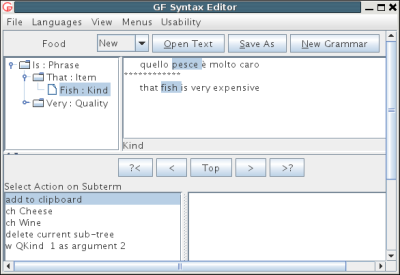
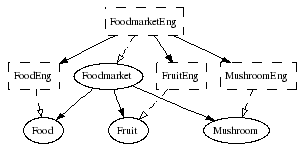

This tutorial gives a hands-on introduction to grammar writing in GF. It has been written for all programmers who want to learn to write grammars in GF. It will go through the programming concepts of GF, and also explain, without presupposing them, the main ingredients of GF: linguistics, functional programming, and type theory. This knowledge will be introduced as a part of grammar writing practice. Thus the tutorial should be accessible to anyone who has some previous experience from any programming language; the basics of using computers are also presupposed, e.g. the use of text editors and the management of files.
We start in the second chapter by building a "Hello World" grammar, which covers greetings in three languages: English (hello world), Finnish (terve maailma), and Italian (ciao mondo). This multilingual grammar is based on the most central idea of GF: the distinction between abstract syntax (the logical structure) and concrete syntax (the sequence of words).
From the "Hello World" example, we proceed in the third chapter to a larger grammar for the domain of food. In this grammar, you can say things like
formaggio italiano
vino delizioso, vini deliziosi, pizza deliziosa, pizze deliziose
The complete description of morphology and syntax in natural languages is in GF preferably left to the resource grammar library. Its use is therefore an important part of GF programming, and it is covered in the fifth chapter. How to contribute to resource grammars as an author will only be covered in Part III; however, the tutorial does go through all the programming concepts of GF, including those involved in resource grammars.
In addition to multilinguality, semantics is an important aspect of GF grammars. The "purely linguistic" aspects (morphology and syntax) belong to the concrete syntax part of GF, whereas semantics is expressed in the abstract syntax. After the presentation of concrete syntax constructs, we proceed in the sixth chapter to the enrichment of abstract syntax with dependent types, variable bindings, and semantic definitions. the seventh chapter concludes the tutorial by technical tips for implementing formal languages. It will also illustrate the close relation between GF grammars and compilers by actually implementing a small compiler from C-like statements and expressions to machine code similar to Java Virtual Machine.
English and Italian are used as example languages in many grammars. Of course, we will not presuppose that the reader knows any Italian. We have chosen Italian because it has a rich structure that illustrates very well the capacities of GF. Moreover, even those readers who don't know Italian, will find many of its words familiar, due to the Latin heritage. The exercises will encourage the reader to port the examples to other languages as well; in particular, it should be instructive for the reader to look at her own native language from the point of view of writing a grammar implementation.
To learn how to write GF grammars is not the only goal of this tutorial. We will also explain the most important commands of the GF system, mostly in passing. With these commands, simple application programs such as translation and quiz systems, can be built simply by writing scripts for the GF system. More complicated applications, such as natural-language interfaces and dialogue systems, moreover require programming in some general-purpose language; such applications are covered in the eighth chapter.
In this chapter, we will introduce the GF system and write the first GF grammar, a "Hello World" grammar. While extremely small, this grammar already illustrates how GF can be used for the tasks of translation and multilingual generation.
We use the term GF for three different things:
The relation between these things is obvious: the GF system is an implementation of the GF programming language, which in turn is built on the ideas of the GF theory. The main focus of this book is on the GF programming language. We learn how grammars are written in this language. At the same time, we learn the way of thinking in the GF theory. To make this all useful and fun, and to encourage experimenting, we make the grammars run on a computer by using the GF system.
A GF program is called a grammar. A grammar is, traditionally, a definition of a language. From this definition, different language processing components can be derived:
A GF grammar is thus a declarative program from which these procedures can be automatically derived. In general, a GF grammar is multilingual: it defines many languages and translations between them.
The GF system is open-source free software, which can be downloaded via the GF Homepage:
gf.digitalgrammars.com
In particular, many of the examples in this book are included in the
subdirectory examples/tutorial of the source distribution package.
This directory is also available
online.
If you want to compile GF from source, you need a Haskell compiler. To compile the interactive editor, you also need a Java compilers. But normally you don't have to compile anything yourself, and you definitely don't need to know Haskell or Java to use GF.
We are assuming the availability of a Unix shell. Linux and Mac OS X users have it automatically, the latter under the name "terminal". Windows users are recommended to install Cywgin, the free Unix shell for Windows.
To start the GF system, assuming you have installed it, just type
gf in the Unix (or Cygwin) shell:
% gf
You will see GF's welcome message and the prompt >.
The command
> help
will give you a list of available commands.
As a common convention in this book, we will use
% as a prompt that marks system commands
> as a prompt that marks GF commands
Thus you should not type these prompts, but only the characters that follow them.
The tradition in programming language tutorials is to start with a program that prints "Hello World" on the terminal. GF should be no exception. But our program has features that distinguish it from most "Hello World" programs:
A GF program, in general, is a multilingual grammar. Its main parts are
The abstract syntax defines, in a language-independent way, what meanings can be expressed in the grammar. In the "Hello World" grammar we want to express Greetings, where we greet a Recipient, which can be World or Mum or Friends. Here is the entire GF code for the abstract syntax:
-- a "Hello World" grammar
abstract Hello = {
flags startcat = Greeting ;
cat Greeting ; Recipient ;
fun
Hello : Recipient -> Greeting ;
World, Mum, Friends : Recipient ;
}
The code has the following parts:
Hello
Greeting is the
main category, i.e. the one in which parsing and generation are
performed by default
Greeting and Recipient
are categories, i.e. types of meanings
Hello constructing a greeting from a recipient,
as well as the three possible recipients
A concrete syntax defines a mapping from the abstract meanings to their expressions in a language. We first give an English concrete syntax:
concrete HelloEng of Hello = {
lincat Greeting, Recipient = {s : Str} ;
lin
Hello recip = {s = "hello" ++ recip.s} ;
World = {s = "world"} ;
Mum = {s = "mum"} ;
Friends = {s = "friends"} ;
}
The major parts of this code are:
Hello, itself named HelloEng
Greeting and Recipient are records with a string s
Hello greeting
has a function telling that the word hello is prefixed to the string
s contained in the record recip
To make the grammar truly multilingual, we add a Finnish and an Italian concrete syntax:
concrete HelloFin of Hello = {
lincat Greeting, Recipient = {s : Str} ;
lin
Hello recip = {s = "terve" ++ recip.s} ;
World = {s = "maailma"} ;
Mum = {s = "äiti"} ;
Friends = {s = "ystävät"} ;
}
concrete HelloIta of Hello = {
lincat Greeting, Recipient = {s : Str} ;
lin
Hello recip = {s = "ciao" ++ recip.s} ;
World = {s = "mondo"} ;
Mum = {s = "mamma"} ;
Friends = {s = "amici"} ;
}
Now we have a trilingual grammar usable for translation and many other tasks, which we will now start experimenting with.
In order to compile the grammar in GF, each of the four modules
has to be put into a file named Modulename.gf:
Hello.gf HelloEng.gf HelloFin.gf HelloIta.gf
The first GF command needed when using a grammar is to import it.
The command has a long name, import, and a short name, i.
When you have started GF (by the shell command gf), you can thus type either
> import HelloEng.gf
or
> i HelloEng.gf
to get the same effect. In general, all GF commands have a long and a short name; short names are convenient when typing commands by hand, whereas long command names are more readable in scripts, i.e. files that include sequences of commands.
The effect of import is that the GF system compiles your grammar
into an internal representation, and shows a new prompt when it is ready.
It will also show how much CPU time was consumed:
> i HelloEng.gf
- compiling Hello.gf... wrote file Hello.gfc 8 msec
- compiling HelloEng.gf... wrote file HelloEng.gfc 12 msec
12 msec
>
You can now use GF for parsing:
> parse "hello world"
Hello World
The parse (= p) command takes a string
(in double quotes) and returns an abstract syntax tree --- the meaning
of the string as defined in the abstract syntax.
A tree is, in general, something easier than a string
for a machine to understand and to process further, although this
is not so obvious in this simple grammar. The syntax for trees is that
of function application, which in GF is written
function argument1 ... argumentn
Parentheses are only needed for grouping. For instance, f (a b) is
f applied to the application of a to b. This is different
from f a b, which is f applied to a and b.
Strings that return a tree when parsed do so in virtue of the grammar you imported. Try to parse something that is not in grammar, and you will fail
> parse "hello dad"
Unknown words: dad
> parse "world hello"
no tree found
In the first example, the failure is caused by an unknown word. In the second example, the combination of words is ungrammatical.
In addition to parsing, you can also use GF for linearization
(linearize = l). This is the inverse of
parsing, taking trees into strings:
> linearize Hello World
hello world
What is the use of this? Typically not that you type in a tree at the GF prompt. The utility of linearization comes from the fact that you can obtain a tree from somewhere else --- for instance, from a parser. A prime example of this is translation: you parse with one concrete syntax and linearize with another. Let us now do this by first importing the Italian grammar:
> import HelloIta.gf
We can now parse with HelloEng and pipe the result
into linearizing with HelloIta:
> parse -lang=HelloEng "hello mum" | linearize -lang=HelloIta
ciao mamma
Notice that, since there are now two concrete syntaxes read into the system, the commands use a language flag to indicate which concrete syntax is used in each operation. If no language flag is given, the last-imported language is applied.
To conclude the translation exercise, we import the Finnish grammar and pipe English parsing into multilingual generation:
> parse -lang=HelloEng "hello friends" | linearize -multi
terve ystävät
ciao amici
hello friends
Exercise. Test the parsing and translation examples shown above, as well as some other examples, in different combinations of languages.
Exercise. Extend the grammar Hello.gf and some of the
concrete syntaxes by five new recipients and one new greeting
form.
Exercise. Add a concrete syntax for some other languages you might know.
Exercise. Add a pair of greetings that are expressed in one and the same way in one language and in two different ways in another. For instance, good morning and good afternoon in English are both expressed as buongiorno in Italian. Test what happens when you translate buongiorno to English in GF.
Exercise. Inject errors in the Hello grammars, for example, leave out
some line, omit a variable in a lin rule, or change the name in one occurrence
of a variable. Inspect the error messages generated by GF.
A normal "hello world" program written in C is executable from the
Unix shell and print its output on the terminal. This is possible in GF
as well, by using the gf program in a Unix pipe. Invoking gf
can be made with grammar names as arguments,
% gf HelloEng.gf HelloFin.gf HelloIta.gf
which has the same effect as opening gf and then importing the
grammars. A command can be send to this gf state by piping it from
Unix's echo command:
% echo "l -multi Hello Wordl" | gf HelloEng.gf HelloFin.gf HelloIta.gf
which will execute the command and then quit. Alternatively, one can write a script, a file containing the lines
import HelloEng.gf
import HelloFin.gf
import HelloIta.gf
linearize -multi Hello World
If we name this script hello.gfs, we can do
$ gf -batch -s <hello.gfs s
ciao mondo
terve maailma
hello world
The options -batch and -s ("silent") remove prompts, CPU time,
and other messages. Writing GF scripts and Unix shell scripts that call
GF is the simplest way to build application programs that use GF grammars.
In the eighth chapter, we will see how to build stand-alone programs that don't need
the GF system to run.
Exercise. (For Unix hackers.) Write a GF application that reads an English string from the standard input and writes an Italian translation to the output.
Now we have built our first multilingual grammar and seen the basic functionalities of GF: parsing and linearization. We have tested these functionalities inside the GF program. In the forthcoming chapters, we will build larger grammars and can then get more out of these functionalities. But we will also introduce new ones:
The usefulness of GF would be quite limited if grammars were usable only inside the GF system. In the eighth chapter, we will see other ways of using grammars:
All GF functionalities, both those inside the GF program and those
ported to other environments,
are of course already applicable to the simplest of grammars,
such as the Hello grammars presented above. But the main focus
of this tutorial will be on grammar writing. Thus we will show
how larger and more expressive grammars can be built by using
the constructs of the GF programming language, before entering the
applications.
As the last section of each chapter, we will give a summary of the GF language features covered in the chapter. The presentation is rather technical and intended as a reference for later use, rather than to be read at once. The summaries may cover some new features, which complement the discussion in the main chapter.
A GF grammar consists of modules, into which judgements are grouped. The most important module forms are
abstract A = {...} , abstract syntax A with judgements in
the module body {...}.
concrete C of A = {...}, concrete syntax C of the
abstract syntax A, with judgements in the module body {...}.
Each module is written in a file named Modulename.gf.
Rules in a module body are called judgements. Keywords such as
fun and lin are used for distinguishing between
judgement forms. Here is a summary of the most important
judgement forms, which we have considered by now:
| form | reading | module type | |
|---|---|---|---|
cat C |
C is a category | abstract | |
fun f : A |
f is a function of type A | abstract | |
lincat C = T |
category C has linearization type T | concrete | |
lin f x1 ... xn = t |
function f has linearization t | concrete | |
flags p = v |
flag p has value v | any | |
Both abstract and concrete modules may moreover contain comments of the forms
-- anything until a newline
{- anything except hyphen followed by closing brace -}
Judgements are terminated by semicolons. Shorthands permit the sharing of the keyword in subsequent judgements,
cat C ; D ; === cat C ; cat D ;
and of the right-hand-side in subsequent judgements of the same form
fun f, g : A ; === fun f : A ; g : A ;
We will use the symbol === to indicate syntactic sugar when
speaking about GF. Thus it is not a symbol of the GF language.
Each judgement declares a name, which is an identifier.
An identifier is a letter followed by a sequence of letters, digits, and
characters ' or _. Each identifier can only be
defined once in the same module (that is, as next to the judgement keyword;
local variables such as those in lin judgemenrs can be
reused in other judgements).
Names are in scope in the rest of the module, i.e. usable in the other judgements of the module (subject to type restrictions, of course). Also the name of the module is an identifier in scope.
The order of judgements in a module is free. In particular, an identifier need not be declared before it is used.
A type in an abstract syntax are either a basic type,
i.e. one introduced in a cat judgement, or a
function type of the form
A1 -> ... -> An -> A
where each of A1, ..., An, A is a basic type.
The last type in the arrow-separated sequence
is the value type of the function type, and the earlier types are
its argument types.
In a concrete syntax, the available types include
Str
{ r1 : T1 ; ... ; rn : Tn }
Token lists are often briefly called strings.
Each semi-colon separated part in a record type is called a field. The identifier introduced by the left-hand-side of a field is called a label.
A term in abstract syntax is a function application of form
f a1 ... an
where f is a function declared in a fun judgement and a1 ... an
are terms. These terms are also called abstract syntax trees, or just
trees.
The tree above is well-typed and has the type A, if
f : A1 -> ... -> An -> A
and each ai has type an.
A term used in concrete syntax has one the forms
"foo", of type Str
"foo" ++ "bar",
{ r1 = t1 ; ... ; rn = Tn },
of type { r1 : R1 ; ... ; rn : Rn }
t.r of a term t that has a record type,
with the record label r; the projection has the corresponding record
field type
x bound by the left-hand-side of a lin rule,
of the corresponding linearization type
Each quoted string is treated as one token, and strings concatenated by
++ are treated as separate tokens. Tokens are, by default, written with
a space in between. This behaviour can be changed by lexer and unlexer
flags, as will be explained later "Rseclexing. Therefore it is usually
not correct to have a space in a token. Writing
"hello world"
in a grammar would give the parser the task to find a token with a space
in it, rather than two tokens "hello" and "world". If the latter is
what is meant, it is possible to use the shorthand
["hello world"] === "hello" ++ "world"
The empty string is denoted by [] or, equivalently, `` or ``[].
An important functionality of the GF system is static type checking. This means that the grammars are controlled to be well-formed, so that all run-time errors are eliminated. The main type checking principles are the following:
lincat of each cat and a lin
for each fun in the abstract syntax that it is "of"
lin rules are type checked with respect to the lincat and fun
rules
In this chapter, we will write a grammar that has much more structure than
the Hello grammar. We will look at how the abstract syntax
is divided into suitable categories, and how infinitely many
phrases can be generated by using recursive rules. We will also
introduce modularity by showing how a grammar can be
divided into modules, and how functional programming
can be used to share code in and among modules.
We will write a grammar that defines a set of phrases usable for speaking about food:
Phrase
Phrase can be built by assigning a Quality to an Item
(e.g. this cheese is Italian)
Item are build from a Kind by prefixing this or that
(e.g. this wine)
Kind is either atomic (e.g. cheese), or formed
qualifying a given Kind with a Quality (e.g. Italian cheese)
Quality is either atomic (e.g. Italian,
or built by modifying a given Quality with the word very (e.g. very warm)
These verbal descriptions can be expressed as the following abstract syntax:
abstract Food = {
flags startcat = Phrase ;
cat
Phrase ; Item ; Kind ; Quality ;
fun
Is : Item -> Quality -> Phrase ;
This, That : Kind -> Item ;
QKind : Quality -> Kind -> Kind ;
Wine, Cheese, Fish : Kind ;
Very : Quality -> Quality ;
Fresh, Warm, Italian, Expensive, Delicious, Boring : Quality ;
}
In this abstract syntax, we can build Phrases such as
Is (This (QKind Delicious (QKind Italian Wine))) (Very (Very Expensive))
In the English concrete syntax, we will want to linearize this into
this delicious Italian wine is very very expensive
The English concrete syntax gives no surprises:
concrete FoodEng of Food = {
lincat
Phrase, Item, Kind, Quality = {s : Str} ;
lin
Is item quality = {s = item.s ++ "is" ++ quality.s} ;
This kind = {s = "this" ++ kind.s} ;
That kind = {s = "that" ++ kind.s} ;
QKind quality kind = {s = quality.s ++ kind.s} ;
Wine = {s = "wine"} ;
Cheese = {s = "cheese"} ;
Fish = {s = "fish"} ;
Very quality = {s = "very" ++ quality.s} ;
Fresh = {s = "fresh"} ;
Warm = {s = "warm"} ;
Italian = {s = "Italian"} ;
Expensive = {s = "expensive"} ;
Delicious = {s = "delicious"} ;
Boring = {s = "boring"} ;
}
Let us test how the grammar works in parsing:
> import FoodEng.gf
> parse "this delicious wine is very very Italian"
Is (This (QKind Delicious Wine)) (Very (Very Italian))
We can also try parsing in other categories than the startcat,
by setting the command-line cat flag:
p -cat=Kind "very Italian wine"
QKind (Very Italian) Wine
Exercise. Extend the Food grammar by ten new food kinds and
qualities, and run the parser with new kinds of examples.
Exercise. Add a rule that enables question phrases of the form is this cheese Italian.
Exercise. Enable the optional prefixing of phrases with the words "excuse me but". Do this in such a way that the prefix can occur at most once.
When we have a grammar above a trivial size, especially a recursive one, we need more efficient ways of testing it than just by parsing sentences that happen to come to our minds. One way to do this is based on automatic generation, which can be either random generation or exhaustive generation.
Random generation (generate_random = gr) is an operation that
builds a random tree in accordance with an abstract syntax:
> generate_random
Is (This (QKind Italian Fish)) Fresh
By using a pipe, random generation can be fed into linearization:
> generate_random | linearize
this Italian fish is fresh
Random generation is a good way to test a grammar. It can also give results that are surprising, which shows how fast we lose intuition when we write complex grammars.
By using the number flag, several trees can be generated
in one command:
> gr -number=10 | l
that wine is boring
that fresh cheese is fresh
that cheese is very boring
this cheese is Italian
that expensive cheese is expensive
that fish is fresh
that wine is very Italian
this wine is Italian
this cheese is boring
this fish is boring
To generate all phrases that a grammar can produce,
GF provides the command generate_trees = gt.
> generate_trees | l
that cheese is very Italian
that cheese is very boring
that cheese is very delicious
that cheese is very expensive
that cheese is very fresh
...
this wine is expensive
this wine is fresh
this wine is warm
We get quite a few trees but not all of them: only up to a given
depth of trees. The default depth is 3; the depth can be
set by using the depth flag:
> generate_trees -depth=5 | l
Other options to the generation commands (like all commands) can be seen
by GF's help = h command:
> help gr
> help gt
Exercise. If the command gt generated all
trees in your grammar, it would never terminate. Why?
Exercise. Measure how many trees the grammar gives with depths 4 and 5,
respectively. Hint. You can
use the Unix word count command wc to count lines.
A pipe of GF commands can have any length, but the "output type" (either string or tree) of one command must always match the "input type" of the next command, in order for the result to make sense.
The intermediate results in a pipe can be observed by putting the
tracing option -tr to each command whose output you
want to see:
> gr -tr | l -tr | p
Is (This Cheese) Boring
this cheese is boring
Is (This Cheese) Boring
This facility is useful for test purposes: the pipe above can show if a grammar is ambiguous, i.e. contains strings that can be parsed in more than one way.
Exercise. Extend the Food grammar so that it produces ambiguous
strings, and try out the ambiguity test.
To save the outputs of GF commands into a file, you can
pipe it to the write_file = wf command,
> gr -number=10 | linearize | write_file exx.tmp
You can read the file back to GF with the
read_file = rf command,
> read_file exx.tmp | parse -lines
Notice the flag -lines given to the parsing
command. This flag tells GF to parse each line of
the file separately. Without the flag, the grammar could
not recognize the string in the file, because it is not
a sentence but a sequence of ten sentences.
Files with examples can be used for regression testing of grammars. The most systematic way to do this is by generating treebanks; see here.
The gibberish code with parentheses returned by the parser does not
look like trees. Why is it called so? From the abstract mathematical
point of view, trees are a data structure that
represents nesting: trees are branching entities, and the branches
are themselves trees. Parentheses give a linear representation of trees,
useful for the computer. But the human eye may prefer to see a visualization;
for this purpose, GF provides the command visualize_tree = vt, to which
parsing (and any other tree-producing command) can be piped:
> parse "this delicious cheese is very Italian" | visualize_tree
This command uses the programs Graphviz and Ghostview, which you might not have, but which are freely available on the web.
Alternatively, you can print the tree into a file
e.g. a .png file that
can be be viewed with e.g. an HTML browser and also included in an
HTML document. You can do this
by saving the file grphtmp.dot, which the command vt
produces. Then you can process this file with the dot
program (from the Graphviz package).
% dot -Tpng grphtmp.dot > mytree.png
If you don't have Ghostview, or want to view graphs in some other way,
you can call dot and a suitable
viewer (e.g. open in Mac) without leaving GF, by using
a system command: ! followed by a Unix command,
> ! dot -Tpng grphtmp.dot > mytree.png
> ! open mytree.png
Another form of system commands are those that receive arguments from
GF pipes. The escape symbol
is then ?.
> generate_trees | ? wc
Exercise. (Exercise drom 3.3.1 revisited.)
Measure how many trees the grammar FoodEng gives with depths 4 and 5,
respectively. Use the Unix word count command wc to count lines, and
a pipe from a GF command into a Unix command.
We write the Italian grammar in a straightforward way, by replacing English words with their dictionary equivalents:
concrete FoodIta of Food = {
lincat
Phrase, Item, Kind, Quality = {s : Str} ;
lin
Is item quality = {s = item.s ++ "è" ++ quality.s} ;
This kind = {s = "questo" ++ kind.s} ;
That kind = {s = "quello" ++ kind.s} ;
QKind quality kind = {s = kind.s ++ quality.s} ;
Wine = {s = "vino"} ;
Cheese = {s = "formaggio"} ;
Fish = {s = "pesce"} ;
Very quality = {s = "molto" ++ quality.s} ;
Fresh = {s = "fresco"} ;
Warm = {s = "caldo"} ;
Italian = {s = "italiano"} ;
Expensive = {s = "caro"} ;
Delicious = {s = "delizioso"} ;
Boring = {s = "noioso"} ;
}
An alert reader, or one who already knows Italian, may notice one point in which the change is more substantial than just replacement of words: the order of a quality and the kind it modifies in
QKind quality kind = {s = kind.s ++ quality.s} ;
Thus Italian says vino italiano for Italian wine. (Some Italian adjectives
are put before the noun. This distinction can be controlled by parameters, which
are introduced in the fourth chapter.)
Exercise. Write a concrete syntax of Food for some other language.
You will probably end up with grammatically incorrect linearizations --- but don't
worry about this yet.
Exercise. If you have written Food for German, Swedish, or some
other language, test with random or exhaustive generation what constructs
come out incorrect, and prepare a list of those ones that cannot be helped
with the currently available fragment of GF. You can return to your list
after having worked out the fourth chapter.
Sometimes there are alternative ways to define a concrete syntax.
For instance, if we use the Food grammars in a restaurant phrase
book, we may want to accept different words for expressing the quality
"delicious" ---- and different languages can differ in how many
such words they have. Then we don't want to put the distinctions into
the abstract syntax, but into concrete syntaxes. Such semantically
neutral distinctions are known as free variation in linguistics.
The variants construct of GF expresses free variation. For example,
lin Delicious = {s = variants {"delicious" ; "exquisit" ; "tasty"}} ;
says that Delicious can be linearized to any of delicious,
exquisit, and tasty. As a consequence, both these words result in the
tree Delicious when parsed. By default, the linearize command
shows only the first variant from each variants list; to see them
all, the option -all can be used:
> p "this exquisit wine is delicious" | l -all
this delicious wine is delicious
this delicious wine is exquisit
...
In linguistics, it is well known that free variation is almost non-existing, if all aspects of expressions are taken into account, including style. Therefore, free variation should not be used in grammars that are meant as libraries for other grammars, as in the fifth chapter. However, in a specific application, free variation is an excellent way to scale up the parser to variations in user input that make no difference in the semantic treatment.
An example that clearly illustrates these points is the
English negation. If we added to the Food grammar the negation
of a quality, we could accept both contracted and uncontracted not:
fun IsNot : Item -> Quality -> Phrase ;
lin IsNot item qual =
{s = item.s ++ variants {"isn't" ; ["is not"]} ++ qual.s} ;
Both forms are likely to occur in user input. Since there is no corresponding contrast in Italian, we do not want to put the distinction in the abstract syntax. Yet there is a stylistic difference between these two forms. In particular, if we are doing generation rather than parsing, we will want to choose the one or the other depending on the kind of language we want to generate.
A limiting case of free variation is an empty variant list
variants {}
It can be used e.g. if a word lacks a certain inflection form.
Free variation works for all types in concrete syntax; all terms in
a variants list must be of the same type.
Exercise. Modify FoodIta in such a way that a quality can
be assigned to an item by using two different word orders, exemplified
by questo vino è delizioso and è delizioso questo vino
(a real variation in Italian),
and that it is impossible to say that something is boring
(a rather contrived example).
A multilingual treebank is a set of trees with their translations in different languages:
> gr -number=2 | tree_bank
Is (That Cheese) (Very Boring)
quello formaggio è molto noioso
that cheese is very boring
Is (That Cheese) Fresh
quello formaggio è fresco
that cheese is fresh
There is also an XML format for treebanks and a set of commands
suitable for regression testing; see help tb for more details.
If translation is what you want to do with a set of grammars, a convenient
way to do it is to open a translation_session = ts. In this session,
you can translate between all the languages that are in scope.
A dot . terminates the translation session.
> ts
trans> that very warm cheese is boring
quello formaggio molto caldo è noioso
that very warm cheese is boring
trans> questo vino molto italiano è molto delizioso
questo vino molto italiano è molto delizioso
this very Italian wine is very delicious
trans> .
>
This is a simple language exercise that can be automatically
generated from a multilingual grammar. The system generates a set of
random sentences, displays them in one language, and checks the user's
answer given in another language. The command translation_quiz = tq
makes this in a subshell of GF.
> translation_quiz FoodEng FoodIta
Welcome to GF Translation Quiz.
The quiz is over when you have done at least 10 examples
with at least 75 % success.
You can interrupt the quiz by entering a line consisting of a dot ('.').
this fish is warm
questo pesce è caldo
> Yes.
Score 1/1
this cheese is Italian
questo formaggio è noioso
> No, not questo formaggio è noioso, but
questo formaggio è italiano
Score 1/2
this fish is expensive
You can also generate a list of translation exercises and save it in a
file for later use, by the command translation_list = tl
> translation_list -number=25 FoodEng FoodIta | write_file transl.txt
The number flag gives the number of sentences generated.
Any multilingual grammar can be used in the graphical syntax editor, which is
opened by the shell
command gfeditor followed by the names of the grammar files.
Thus
% gfeditor FoodEng.gf FoodIta.gf
opens the editor for the two Food grammars.
The editor supports commands for manipulating an abstract syntax tree.
The process is started by choosing a category from the "New" menu.
Choosing Phrase creates a new tree of type Phrase. A new tree
is in general completely unknown: it consists of a metavariable
?1. However, since the category Phrase in Food has
only one possible constructor, Is, the tree is readily
given the form Is ?1 ?2. Here is what the editor looks like at
this stage:

Editing goes on by refinements, i.e. choices of constructors from the menu, until no metavariables remain. Here is a tree resulting from the current editing session:

Editing can be continued even when the tree is finished. The user can shift the focus to some of the subtrees by clicking at it or the corresponding part of a linearization. In the picture, the focus is on "fish". Since there are no metavariables, the menu shows no refinements, but some other possible actions:
QKind ? Fish, where the quality can be given in a later refinement
In addition to menu-based editing, the tool supports refinement by parsing, which is accessible by middle-clicking in the tree or in the linearization field.
Exercise. Construct the sentence
this very expensive cheese is very very delicious
and its Italian translation by using gfeditor.
Readers not familar with context-free grammars, also known as BNF grammars, can skip this section. Those that are familar with them will find here the exact relation between GF and context-free grammars. We will moreover show how the BNF format can be used as input to the GF program; it is often more concise than GF proper, but also more restricted in expressive power.
The grammar FoodEng could be written in a BNF format as follows:
Is. Phrase ::= Item "is" Quality ;
That. Item ::= "that" Kind ;
This. Item ::= "this" Kind ;
QKind. Kind ::= Quality Kind ;
Cheese. Kind ::= "cheese" ;
Fish. Kind ::= "fish" ;
Wine. Kind ::= "wine" ;
Italian. Quality ::= "Italian" ;
Boring. Quality ::= "boring" ;
Delicious. Quality ::= "delicious" ;
Expensive. Quality ::= "expensive" ;
Fresh. Quality ::= "fresh" ;
Very. Quality ::= "very" Quality ;
Warm. Quality ::= "warm" ;
In this format, each rule is prefixed by a label that gives
the constructor function GF gives in its fun rules. In fact,
each context-free rule is a fusion of a fun and a lin rule:
it states simultaneously that
fun Is : Item -> Quality -> Phrase
lin Is item quality = {s = item.s ++ "is" ++ quality.s}
The translation from BNF to GF described above is in fact used in
the GF system to convert BNF grammars into GF. BNF files are recognized
by the file name suffix .cf; thus the grammar above can be
put into a file named food.cf and read into GF by
> import food.cf
Even though we managed to write FoodEng in the context-free format,
we cannot do this for GF grammars in general. It is enough to try this
with FoodIta at the same time as FoodEng,
we lose an important aspect of multilinguality:
that the order of constituents is defined only in concrete syntax.
Thus we could not use context-free FoodEng and FoodIta in a multilingual
grammar that supports translation via common abstract syntax: the
qualification function QKind has different types in the two
grammars.
In general terms, the separation of concrete and abstract syntax allows three deviations from context-free grammar:
The third property is the one that definitely shows that GF is
stronger than context-free: GF can define the copy language
{x x | x <- (a|b)*}, which is known not to be context-free.
The other properties have more to do with the kind of trees that
the grammar can associate with strings: permutation is important
in multilingual grammars, and suppression is exploited in grammars
where trees carry some hidden semantic information (see the sixth chapter
below).
Of course, context-free grammars are also restricted from the grammar engineering point of view. They give no support to modules, functions, and parameters, which are so central for the productivity of GF. Despite the initial conciseness of context-free grammars, GF can easily produce grammars where 30 lines of GF code would need hundreds of lines of context-free grammar code to produce; see exercises here and here.
Exercise. GF can also interpret unlabelled BNF grammars, by creating labels automatically. The right-hand sides of BNF rules can moreover be disjunctions, e.g.
Quality ::= "fresh" | "Italian" | "very" Quality ;
Experiment with this format in GF, possibly with a grammar that you import from some other source, such as a programming language document.
Exercise. Define the copy language {x x | x <- (a|b)*} in GF.
GF uses suffixes to recognize different file formats. The most important ones are:
.gf
.gfc
When you import FoodEng.gf, you see the target files being
generated:
> i FoodEng.gf
- compiling Food.gf... wrote file Food.gfc 16 msec
- compiling FoodEng.gf... wrote file FoodEng.gfc 20 msec
You also see that the GF program does not only read the file
FoodEng.gf, but also all other files that it
depends on --- in this case, Food.gf.
For each file that is compiled, a .gfc file
is generated. The GFC format (="GF Canonical") is the
"machine code" of GF, which is faster to process than
GF source files. When reading a module, GF decides whether
to use an existing .gfc file or to generate
a new one, by looking at modification times.
In GF version 3, the gfc format is replaced by the format suffixed
gfo, "GF object".
Exercise. What happens when you import FoodEng.gf for
a second time? Try this in different situations:
empty (e), which clears the memory
of GF.
FoodEng.gf, be it only an added space.
Food.gf.
When writing a grammar, you have to type lots of characters. You have probably done this by the copy-and-paste method, which is a universally available way to avoid repeating work.
However, there is a more elegant way to avoid repeating work than the copy-and-paste method. The golden rule of functional programming says that
A function separates the shared parts of different computations from the changing parts, its arguments, or parameters. In functional programming languages, such as Haskell, it is possible to share much more code with functions than in languages such as C and Java, because of higher-order functions (functions that takes functions as arguments).
GF is a functional programming language, not only in the sense that
the abstract syntax is a system of functions (fun), but also because
functional programming can be used when defining concrete syntax. This is
done by using a new form of judgement, with the keyword oper (for
operation), distinct from fun for the sake of clarity.
Here is a simple example of an operation:
oper ss : Str -> {s : Str} = \x -> {s = x} ;
The operation can be applied to an argument, and GF will compute the application into a value. For instance,
ss "boy" ===> {s = "boy"}
We use the symbol === to indicate how an expression is
computed into a value; this symbol is not a part of GF.
Thus an oper judgement includes the name of the defined operation,
its type, and an expression defining it. As for the syntax of the defining
expression, notice the lambda abstraction form \x -> t of
the function. It reads: function with variable x and function body
t. Any occurrence of x in t is said to be bound in t.
For lambda abstraction with multiple arguments, we have the shorthand
\x,y -> t === \x -> \y -> t
The notation we have used for linearization rules, where variables are bound on the left-hand side, is actually syntactic sugar for abstraction:
lin f x = t === lin f = \x -> t
Operator definitions can be included in a concrete syntax. But they are usually not really tied to a particular set of linearization rules. They should rather be seen as resources usable in many concrete syntaxes.
The resource module type is used to package
oper definitions into reusable resources. Here is
an example, with a handful of operations to manipulate
strings and records.
resource StringOper = {
oper
SS : Type = {s : Str} ;
ss : Str -> SS = \x -> {s = x} ;
cc : SS -> SS -> SS = \x,y -> ss (x.s ++ y.s) ;
prefix : Str -> SS -> SS = \p,x -> ss (p ++ x.s) ;
}
Any number of resource modules can be
opened in a concrete syntax, which
makes definitions contained
in the resource usable in the concrete syntax. Here is
an example, where the resource StringOper is
opened in a new version of FoodEng.
concrete FoodEng of Food = open StringOper in {
lincat
S, Item, Kind, Quality = SS ;
lin
Is item quality = cc item (prefix "is" quality) ;
This k = prefix "this" k ;
That k = prefix "that" k ;
QKind k q = cc k q ;
Wine = ss "wine" ;
Cheese = ss "cheese" ;
Fish = ss "fish" ;
Very = prefix "very" ;
Fresh = ss "fresh" ;
Warm = ss "warm" ;
Italian = ss "Italian" ;
Expensive = ss "expensive" ;
Delicious = ss "delicious" ;
Boring = ss "boring" ;
}
Exercise. Use the same string operations to write FoodIta
more concisely.
GF, like Haskell, permits partial application of functions. An example of this is the rule
lin This k = prefix "this" k ;
which can be written more concisely
lin This = prefix "this" ;
The first form is perhaps more intuitive to write but, once you get used to partial application, you will appreciate its conciseness and elegance. The logic of partial application is known as currying, with a reference to Haskell B. Curry. The idea is that any n-place function can be seen as a 1-place function whose value is an n-1 -place function. Thus
oper prefix : Str -> SS -> SS ;
can be used as a 1-place function that takes a Str into a
function SS -> SS. The expected linearization of This is exactly
a function of such a type, operating on an argument of type Kind
whose linearization is of type SS. Thus we can define the
linearization directly as prefix "this".
An important part of the art of functional programming is to decide the order
of arguments in a function, so that partial application can be used as much
as possible. For instance, of the operation prefix we know that it
will be typically applied to linearization variables with constant strings.
This is the reason to put the Str argument before the SS argument --- not
the prefixity. A postfix function would have exactly the same order of arguments.
Exercise. Define an operation infix analogous to prefix,
such that it allows you to write
lin Is = infix "is" ;
To test a resource module independently, you must import it
with the flag -retain, which tells GF to retain oper definitions
in the memory; the usual behaviour is that oper definitions
are just applied to compile linearization rules
(this is called inlining) and then thrown away.
> import -retain StringOper.gf
The command compute_concrete = cc computes any expression
formed by operations and other GF constructs. For example,
> compute_concrete prefix "in" (ss "addition")
{
s : Str = "in" ++ "addition"
}
The module system of GF makes it possible to write a new module that extends
an old one. The syntax of extension is
shown by the following example. We extend Food into MoreFood by
adding a category of questions and two new functions.
abstract Morefood = Food ** {
cat
Question ;
fun
QIs : Item -> Quality -> Question ;
Pizza : Kind ;
}
Parallel to the abstract syntax, extensions can be built for concrete syntaxes:
concrete MorefoodEng of Morefood = FoodEng ** {
lincat
Question = {s : Str} ;
lin
QIs item quality = {s = "is" ++ item.s ++ quality.s} ;
Pizza = {s = "pizza"} ;
}
The effect of extension is that all of the contents of the extended and extending module are put together. We also say that the new module inherits the contents of the old module.
At the same time as extending a module of the same type, a concrete
syntax module may open resources. Since open takes effect in
the module body and not in the extended module, its logical place
in the module header is after the extend part:
concrete MorefoodIta of Morefood = FoodIta ** open StringOper in {
lincat
Question = SS ;
lin
QIs item quality = ss (item.s ++ "è" ++ quality.s) ;
Pizza = ss "pizza" ;
}
Resource modules can extend other resource modules, in the same way as modules of other types can extend modules of the same type. Thus it is possible to build resource hierarchies.
Specialized vocabularies can be represented as small grammars that only do "one thing" each. For instance, the following are grammars for fruit and mushrooms
abstract Fruit = {
cat Fruit ;
fun Apple, Peach : Fruit ;
}
abstract Mushroom = {
cat Mushroom ;
fun Cep, Agaric : Mushroom ;
}
They can afterwards be combined into bigger grammars by using multiple inheritance, i.e. extension of several grammars at the same time:
abstract Foodmarket = Food, Fruit, Mushroom ** {
fun
FruitKind : Fruit -> Kind ;
MushroomKind : Mushroom -> Kind ;
}
The main advantages with splitting a grammar to modules are
reusability, separate compilation, and division of labour.
Reusability means
that one and the same module can be put into different uses; for instance,
a module with mushroom names might be used in a mycological information system
as well as in a restaurant phrasebook. Separate compilation means that a module
once compiled into .gfc need not be compiled again unless changes have
taken place.
Division of labour means simply that programmers that are experts in
special areas can work on modules belonging to those areas.
Exercise. Refactor Food by taking apart Wine into a special
Drink module.
When you have created all the abstract syntaxes and
one set of concrete syntaxes needed for Foodmarket,
your grammar consists of eight GF modules. To see how their
dependences look like, you can use the command
visualize_graph = vg,
> visualize_graph
and the graph will pop up in a separate window:

The graph uses
Just as the visualize_tree = vt command, the freely available tools
Ghostview and Graphviz are needed. As an alternative, you can again print
the graph into a .dot file by using the command print_multi = pm:
> print_multi -printer=graph | write_file Foodmarket.dot
> ! dot -Tpng Foodmarket.dot > Foodmarket.png
The general form of a module is
= (Extends **)? (open Opens in)? Body
abstract, concrete, and resource.
If Moduletype is concrete, the Of-part has the form of A,
where A is the name of an abstract module. Otherwise it is empty.
The name of the module is given by the identifier M.
The optional Extends part is a comma-separated
list of module names, which have to be modules of
the same Moduletype. The contents of these modules are inherited by
M. This means that they are both usable in Body and exported by M,
i.e. inherited when M is inherited and available when M is opened.
(Exception: oper and param judgements are not inherited from
concrete modules.)
The optional Opens part is a comma-separated list of resource module names. The contents of these modules are usable in the Body, but they are not exported.
Opening can be qualified, e.g.
concrete C of A = open (P = Prelude) in ...
This means that the names from Prelude are only available in the form
P.name. This form of qualifying a name is always possible, and it can
be used to resolve name conflicts, which result when the same name is
declared in more than one module that is in scope.
The Body part consists of judgements. The judgement form table #secjment is extended with the following forms:
| form | reading | module type | |
|---|---|---|---|
oper h : T = t |
operation h of type T is defined as t | resource, concrete | |
param P = C1 | ... | Cn |
parameter type P has constructors C1...Cn | resource, concrete | |
The param judgement will be explained in the next chapter.
The type part of an oper judgement can be omitted, if the type can be inferred
by the GF compiler.
oper hello = "hello" ++ "world" ;
As a rule, type inference works for all terms except lambda abstracts.
Lambda abstracts are expressions of the form \x -> t,
where x is a variable bound in the expression t, which is the
body of the lambda abstract. The type of the lambda abstract is
A ->B, where A is the type of the variable x and
B the type of the body t.
For multiple lambda abstractions, there is a shorthand
\x,y -> t === \x -> \y -> t
For lin judgements, there is the shorthand
lin f x = t === lin f = \x -> t
The variants construct of GF can be used to give a list of
concrete syntax terms, of the same type, in free variation. For example,
variants {["does not"] ; "doesn't"}
A limiting case is the empty variant list variants {}.
The .cf file format is used for context-free grammars, which are
always interpretable as GF grammars. Files of this format consist of
rules of the form
.)? Cat ::= RHS ;
The Extended BNF format (EBNF) can also be used, in files suffixed .ebnf.
This format does not allow user-written labels. The right-hand-side of a rule
can contain everything that is possible in the .cf format, but also
optional parts (p ?), sequences (p *) and non-empty sequences (p +).
For example, the phrases in FoodEng could be recognized with the following
EBNF grammar:
Phrase ::=
("this" | "that") Quality* ("wine" | "cheese" | "fish") "is" Quality ;
Quality ::=
("very"* ("fresh" | "warm" | "boring" | "Italian" | "expensive")) ;
The default encoding is iso-latin-1. UTF-8 can be set by the flag coding=utf8
in the grammar. The resource grammar libraries are in iso-latin-1, except Russian
and Arabic, which are in UTF-8. The resources may be changed to UTF-8 in future.
Letters in identifiers must currently be iso-latin-1.
In this chapter, we will introduce the techniques needed for describing the inflection of words, as well as the rules by which correct word forms are selected in syntactic combinations. These techniques are already needed in a very slight extension of the Food grammar of the previous chapter. While explaining how the linguistic problems are solved for English and Italian, we also cover all the language constructs GF has for defining concrete syntax.
It is in principle possible to skip this chapter and go directly to the next, since the use of the GF Resource Grammar library makes it unnecessary to use any more constructs of GF than we have already covered: parameters could be left to library implementors.
Suppose we want to say, with the vocabulary included in
Food.gf, things like
The introduction of plural forms requires two things:
Different languages have different types of inflection and agreement. For instance, Italian has also agreement in gender (masculine vs. feminine). In a multilingual grammar, we want to express such differences between languages in the concrete syntax while ignoring them in the abstract syntax.
To be able to do all this, we need one new judgement form and some new expression forms. We also need to generalize linearization types from strings to more complex types.
Exercise. Make a list of the possible forms that nouns, adjectives, and verbs can have in some languages that you know.
We define the parameter type of number in English by using a new form of judgement:
param Number = Sg | Pl ;
This judgement defines the parameter type Number by listing
its two constructors, Sg and Pl (common shorthands for
singular and plural).
To state that Kind expressions in English have a linearization
depending on number, we replace the linearization type {s : Str}
with a type where the s field is a table depending on number:
lincat Kind = {s : Number => Str} ;
The table type Number => Str is in many respects similar to
a function type (Number -> Str). The main difference is that the
argument type of a table type must always be a parameter type. This means
that the argument-value pairs can be listed in a finite table. The following
example shows such a table:
lin Cheese = {
s = table {
Sg => "cheese" ;
Pl => "cheeses"
}
} ;
The table consists of branches, where a pattern on the
left of the arrow => is assigned a value on the right.
The application of a table to a parameter is done by the selection
operator !, which is computed by pattern matching: it returns
the value from the first branch whose pattern matches the
selection argument. For instance,
table {Sg => "cheese" ; Pl => "cheeses"} ! Pl
===> "cheeses"
As syntactic sugar for table selections, we can define the case expressions, which are common in functional programming and also handy to use in GF.
case e of {...} === table {...} ! e
A parameter type can have any number of constructors, and these can also take arguments from other parameter types. For instance, an accurate type system for English verbs (except be) is
param VerbForm = VPresent Number | VPast | VPastPart | VPresPart ;
This system expresses accurately the fact that only the present tense has number variation. (Agreement also requires variation in person, but this can be defined in syntax rules, by picking the singular form for third person singular subjects and the plural forms for all others). As an example of a table, here are the forms of the verb drink:
table {
VPresent Sg => "drinks" ;
VPresent Pl => "drink" ;
VPast => "drank" ;
VPastPart => "drunk" ;
VPresPart => "drinking"
}
Exercise. In an earlier exercise (previous section),
you made a list of the possible
forms that nouns, adjectives, and verbs can have in some languages that
you know. Now take some of the results and implement them by
using parameter type definitions and tables. Write them into a resource
module, which you can test by using the command compute_concrete.
All English common nouns are inflected for number, most of them in the same way: the plural form is obtained from the singular by adding the ending s. This rule is an example of a paradigm --- a formula telling how a class of words is inflected.
From the GF point of view, a paradigm is a function that takes
a lemma --- also known as a dictionary form or a citation form --- and
returns an inflection
table of desired type. Paradigms are not functions in the sense of the
fun judgements of abstract syntax (which operate on trees and not
on strings), but operations defined in oper judgements.
The following operation defines the regular noun paradigm of English:
oper regNoun : Str -> {s : Number => Str} = \dog -> {
s = table {
Sg => dog ;
Pl => dog + "s"
}
} ;
The gluing operator + tells that
the string held in the variable dog and the ending "s"
are written together to form one token. Thus, for instance,
(regNoun "cheese").s ! Pl ===> "cheese" + "s" ===> "cheeses"
A more complex example are regular verbs:
oper regVerb : Str -> {s : VerbForm => Str} = \talk -> {
s = table {
VPresent Sg => talk + "s" ;
VPresent Pl => talk ;
VPresPart => talk + "ing" ;
_ => talk + "ed"
}
} ;
Notice how a catch-all case for the past tense and the past participle
is expressed by using a wild card pattern _. Here again, pattern matching
tries all patterns in order until it finds a matching pattern;
and it is the wild card that is the first match for both VPast and
VPastPart.
Exercise. Identify cases in which the regNoun paradigm does not
apply in English, and implement some alternative paradigms.
Exercise. Implement some regular paradigms for other languages you have considered in earlier exercises.
We can now enrich the concrete syntax definitions to comprise morphology. This will permit a more radical variation between languages (e.g. English and Italian) than just the use of different words. In general, parameters and linearization types are different in different languages --- but this does not prevent using a the common abstract syntax.
We consider a grammar Foods, which is similar to
Food, with the addition two rules for forming plural items:
fun These, Those : Kind -> Item ;
We also add a noun which in Italian has the feminine case; all nouns in
Food were carefully chosen to be masculine!
fun Pizza : Kind ;
This noun will force us to deal with gender in the Italian grammar, which is what we need for the grammar to scale up for larger applications.
In the English Foods grammar, we need just one type of parameters:
Number as defined above. The phrase-forming rule
fun Is : Item -> Quality -> Phrase ;
is affected by the number because of subject-verb agreement. In English, agreement says that the verb of a sentence must be inflected in the number of the subject. Thus we will linearize
Is (This Pizza) Warm ===> "this pizza is warm"
Is (These Pizza) Warm ===> "these pizzas are warm"
Here it is the copula, i.e. the verb be that is affected. We define the copula as the operation
oper copula : Number -> Str = \n ->
case n of {
Sg => "is" ;
Pl => "are"
} ;
We don't need to inflect the copula for person and tense in this grammar.
The form of the copula in a sentence depends on the
subject of the sentence, i.e. the item
that is qualified. This means that an Item must have such a number to provide.
The obvious way to guarantee this is by including a number field in
the linearization type:
lincat Item = {s : Str ; n : Number} ;
Now we can write precisely the Is rule that expresses agreement:
lin Is item qual = {s = item.s ++ copula item.n ++ qual.s} ;
The copula receives the number that it needs from the subject item.
Let us turn to Item subjects and see how they receive their
numbers. The two rules
fun This, These : Kind -> Item ;
form Items from Kinds by adding determiners, either
this or these. The determiners
require different numbers of their Kind arguments: This
requires the singular (this pizza) and These the plural
(these pizzas). The Kind is the same in both cases: Pizza.
Thus a Kind must have both singular and plural forms.
The obvious way to express this is by using a table:
lincat Kind = {s : Number => Str} ;
The linearization rules for This and These can now be written
lin This kind = {
s = "this" ++ kind.s ! Sg ;
n = Sg
} ;
lin These kind = {
s = "these" ++ kind.s ! Pl ;
n = Pl
} ;
The grammatical relation between the determiner and the noun is similar to agreement, but due to some differences into which we don't go here it is often called government.
Since the same pattern for determination is used four times in
the FoodsEng grammar, we codify it as an operation,
oper det :
Str -> Number -> {s : Number => Str} -> {s : Str ; n : Number} =
\det,n,kind -> {
s = det ++ kind.s ! n ;
n = n
} ;
Now we can write, for instance,
lin This = det Sg "this" ;
lin These = det Pl "these" ;
Notice the order of arguments that permits partial application (here).
In a more lexicalized grammar, determiners would be made into a category of their own and given an inherent number:
lincat Det = {s : Str ; n : Number} ;
fun Det : Det -> Kind -> Item ;
lin Det det kind = {
s = det.s ++ kind.s ! det.n ;
n = det.n
} ;
Linguistically motivated grammars, such as the GF resource grammars,
usually favour lexicalized treatments of words; see here below.
Notice that the fields of the record in Det are precisely the two
arguments needed in the det operation.
Kinds, as in general common nouns in English, have both singular
and plural forms; what form is chosen is determined by the construction
in which the noun is used. We say that the number is a
parametric feature of nouns. In GF, parametric features
appear as argument types of tables in linearization types.
lincat Kind = {s : Number => Str} ;
Items, as in general noun phrases in English, don't
have variation in number. The number is instead an inherent feature,
which the noun phrase passes to the verb. In GF, inherent features
appear as record fields in linearization types.
lincat Item = {s : Str ; n : Number} ;
A category can have both parametric and inherent features. As we will see
in the Italian Foods grammar, nouns have parametric number and
inherent gender:
lincat Kind = {s : Number => Str ; g : Gender} ;
Nothing prevents the same parameter type from appearing both as parametric and inherent feature, or the appearance of several inherent features of the same type, etc. Determining the linearization types of categories is one of the most crucial steps in the design of a GF grammar. These two conditions must be in balance:
Grammar books and dictionaries give good advice on existence; for instance, an Italian dictionary has entries such as
The distinction between parametric and inherent features can be stated in object-oriented programming terms: a linearization type is like a class, which has a method for linearization and also some attributes. In this class, the parametric features appear as arguments to the linearization method, whereas the inherent features appear as attributes.
For words, inherent features are usually given ad hoc as lexical information. For combinations, they are typically inherited from some part of the construction. For instance, qualified noun constructs in Italian inherit their gender from noun part (called the head of the construction in linguistics):
lin QKind qual kind =
let gen = kind.g in {
s = table {n => kind.s ! n ++ qual.s ! gen ! n} ;
g = gen
} ;
This rule uses a local definition (also known as a let expression) to
avoid computing kind.g twice, and also to express the linguistic
generalization that it is the same gender that is both passed to
the adjective and inherited by the construct.
The parametric number feature is in this rule passed to both the noun and
the adjective. In the table, a variable pattern is used to match
any possible number. Variables introduced in patterns are in scope in
the right-hand sides of corresponding branches. Again, it is good to
use a variable to express the linguistic generalization that the number
is passed to the parts, rather than expand the table into Sg and Pl
branches.
Sometimes the puzzle of making agreement and government work in a grammar has several solutions. For instance, precedence in programming languages can be equivalently described by a parametric or an inherent feature (see here below).
In natural language applications that use the resource grammar library, all parameters are hidden from the user, who thereby does not need to bother about them. The only thing that she has to think about is what linguistic categories are given as linearization types to each semantic category.
For instance, the GF resource grammar library has a category NP of
noun phrases, AP of adjectival phrases, and Cl of sentence-like clauses.
In the implementation of Foods here, we will define
lincat Phrase = Cl ; Item = NP ; Quality = AP ;
To express that an item has a quality, we will use a resource function
mkCl : NP -> AP -> Cl ;
in the linearization rule:
lin Is = mkCl ;
In this way, we have no need to think about parameters and agreement.
the fifth chapter will show a complete implementation of Foods by the
resource grammar, port it to many new languages, and extend it with
many new constructs.
We repeat some of the rules above by showing the entire
module FoodsEng, equipped with parameters. The parameters and
operations are, for the sake of brevity, included in the same module
and not in a separate resource. However, some string operations
from the library Prelude are used.
--# -path=.:prelude
concrete FoodsEng of Foods = open Prelude in {
lincat
S, Quality = SS ;
Kind = {s : Number => Str} ;
Item = {s : Str ; n : Number} ;
lin
Is item quality = ss (item.s ++ copula item.n ++ quality.s) ;
This = det Sg "this" ;
That = det Sg "that" ;
These = det Pl "these" ;
Those = det Pl "those" ;
QKind quality kind = {s = table {n => quality.s ++ kind.s ! n}} ;
Wine = regNoun "wine" ;
Cheese = regNoun "cheese" ;
Fish = noun "fish" "fish" ;
Pizza = regNoun "pizza" ;
Very = prefixSS "very" ;
Fresh = ss "fresh" ;
Warm = ss "warm" ;
Italian = ss "Italian" ;
Expensive = ss "expensive" ;
Delicious = ss "delicious" ;
Boring = ss "boring" ;
param
Number = Sg | Pl ;
oper
det : Number -> Str -> {s : Number => Str} -> {s : Str ; n : Number} =
\n,d,cn -> {
s = d ++ cn.s ! n ;
n = n
} ;
noun : Str -> Str -> {s : Number => Str} =
\man,men -> {s = table {
Sg => man ;
Pl => men
}
} ;
regNoun : Str -> {s : Number => Str} =
\car -> noun car (car + "s") ;
copula : Number -> Str =
\n -> case n of {
Sg => "is" ;
Pl => "are"
} ;
}
To find the Prelude library --- or in general,
GF files located in other directories, a path directive is needed
either on the command line or as the first line of
the topmost file compiled.
The paths in the path list are separated by colons (:), and every item
is interpreted primarily relative to the current directory and, secondarily,
to the value of GF_LIB_PATH (GF library path). Hence it is a
good idea to make GF_LIB_PATH to point into your GF/lib/ whenever
you start working in GF. For instance, in the Bash shell this is done by
% export GF_LIB_PATH=<the location of GF/lib in your file system>
Let us try to extend the English noun paradigms so that we can deal with all nouns, not just the regular ones. The goal is to provide a morphology module that is maximally easy to use when words are added to the lexicon. In fact, we can think of a division of labour where a linguistically trained grammarian writes a morphology and hands it over to the lexicon writer who knows much less about the rules of inflection.
In passing, we will introduce some new GF constructs: local definitions, regular expression patterns, and operation overloading.
To start with, it is useful to perform data abstraction from the type of nouns by writing a constructor operation, a worst-case function:
oper mkNoun : Str -> Str -> Noun = \x,y -> {
s = table {
Sg => x ;
Pl => y
}
} ;
This presupposes that we have defined
oper Noun : Type = {s : Number => Str} ;
Using mkNoun, we can define
lin Mouse = mkNoun "mouse" "mice" ;
and
oper regNoun : Str -> Noun = \x -> mkNoun x (x + "s") ;
instead of writing the inflection tables explicitly.
Nouns like mouse-mice, are so irregular that it hardly makes sense to see them as instances of a paradigm that forms the plural from the singular form. But in general, as we will see, there can be different regular patterns in a language.
The grammar engineering advantage of worst-case functions is that
the author of the resource module may change the definitions of
Noun and mkNoun, and still retain the
interface (i.e. the system of type signatures) that makes it
correct to use these functions in concrete modules. In programming
terms, Noun is then treated as an abstract datatype:
its definition is not available, but only an indirect way of constructing
its objects.
A case where a change of the Noun type could
actually happen is if we introduces case (nominative or
genitive) in the noun inflection:
param Case = Nom | Gen ;
oper Noun : Type = {s : Number => Case => Str} ;
Now we have to redefine the worst-case function
oper mkNoun : Str -> Str -> Noun = \x,y -> {
s = table {
Sg => table {
Nom => x ;
Gen => x + "'s"
} ;
Pl => table {
Nom => y ;
Gen => y + case last y of {
"s" => "'" ;
_ => "'s"
}
}
} ;
But up from this level, we can retain the old definitions
lin Mouse = mkNoun "mouse" "mice" ;
oper regNoun : Str -> Noun = \x -> mkNoun x (x + "s") ;
which will just compute to different values now.
In the last definition of mkNoun, we used a case expression
on the last character of the plural form to decide if the genitive
should be formed with an ' (as in dogs-dogs') or with
's (as in mice-mice's). The expression last y
uses the Prelude operation
last : Str -> Str ;
The case expression uses pattern matching over strings, which is supported in GF, alongside with pattern matching over parameters.
Between the completely regular dog-dogs and the completely irregular mouse-mice, there are some predictable variations:
One way to deal with them would be to provide alternative paradigms:
noun_y : Str -> Noun = \fly -> mkNoun fly (init fly + "ies") ;
noun_s : Str -> Noun = \bus -> mkNoun bus (bus + "es") ;
The Prelude function init drops the last character of a token.
But this solution has some drawbacks:
To help the lexicon builder in this task, the morphology programmer can put some intelligence in the regular noun paradigm. The easiest way to express this in GF is by the use of regular expression patterns:
regNoun : Str -> Noun = \w ->
let
ws : Str = case w of {
_ + ("a" | "e" | "i" | "o") + "o" => w + "s" ; -- bamboo
_ + ("s" | "x" | "sh" | "o") => w + "es" ; -- bus, hero
_ + "z" => w + "zes" ;-- quiz
_ + ("a" | "e" | "o" | "u") + "y" => w + "s" ; -- boy
x + "y" => x + "ies" ;-- fly
_ => w + "s" -- car
}
in
mkNoun w ws
In this definition, we have used a local definition just in order to structure the code, even though there is no multiple evaluation to eliminate. In the case expression itself, we have used
| Q
+ Q
The patterns are ordered in such a way that, for instance,
the suffix "oo" prevents bamboo from matching the suffix
"o".
Exercise. The same rules that form plural nouns in English also
apply in the formation of third-person singular verbs.
Write a regular verb paradigm that uses this idea, but first
rewrite regNoun so that the analysis needed to build s-forms
is factored out as a separate oper, which is shared with
regVerb.
Exercise. Extend the verb paradigms to cover all verb forms in English, with special care taken of variations with the suffix ed (e.g. try-tried, use-used).
Exercise. Implement the German Umlaut operation on word stems. The operation changes the vowel of the stressed stem syllable as follows: a to ä, au to äu, o to ö, and u to ü. You can assume that the operation only takes syllables as arguments. Test the operation to see whether it correctly changes Arzt to Ärzt, Baum to Bäum, Topf to Töpf, and Kuh to Küh.
In the sixth chapter, we will introduce dependent function types, where the value type depends on the argument. For this end, we need a notation that binds a variable to the argument type, as in
switchOff : (k : Kind) -> Action k
Function types without variables are actually a shorthand notation: writing
PredVP : NP -> VP -> S
is shorthand for
PredVP : (x : NP) -> (y : VP) -> S
or any other naming of the variables. Actually the use of variables sometimes shortens the code, since they can share a type:
octuple : (x,y,z,u,v,w,s,t : Str) -> Str
If a bound variable is not used, it can here, as elsewhere in GF, be replaced by a wildcard:
octuple : (_,_,_,_,_,_,_,_ : Str) -> Str
A good practice for functions with many arguments of the same type is to indicate the number of arguments:
octuple : (x1,_,_,_,_,_,_,x8 : Str) -> Str
One can also use heuristic variable names to document what information each argument is expected to provide. This is very handy in the types of inflection paradigms:
mkNoun : (mouse,mice : Str) -> Noun
In grammars intended as libraries, it is useful to separate oparation
definitions from their type signatures. The user is only interested
in the type, whereas the definition is kept for the implementor and
the maintainer. This is possible by using separate oper fragments
for the two parts:
oper regNoun : Str -> Noun ;
oper regNoun s = mkNoun s (s + "s") ;
The type checker combines the two into one oper judgement to see
if the definition matches the type. Notice that, in this syntax, it
is moreover possible to bind the argument variables on the left hand side
instead of using lambda abstration.
In the library module, the type signatures are typically placed in
the beginning and the definitions in the end. A more radical separation
can be achieved by using the interface and instance module types
(see here): the type signatures are placed in the interface
and the definitions in the instance.
Large libraries, such as the GF Resource Grammar Library, may define hundreds of names. This can be unpractical for both the library author and the user: the author has to invent longer and longer names which are not always intuitive, and the author has to learn or at least be able to find all these names. A solution to this problem, adopted by languages such as C++, is overloading: one and the same name can be used for several functions. When such a name is used, the compiler performs overload resolution to find out which of the possible functions is meant. Overload resolution is based on the types of the functions: all functions that have the same name must have different types.
In C++, functions with the same name can be scattered everywhere in the program.
In GF, they must be grouped together in overload groups. Here is an example
of an overload group, giving the different ways to define nouns in English:
oper mkN : overload {
mkN : (dog : Str) -> Noun ; -- regular nouns
mkN : (mouse,mice : Str) -> Noun ; -- irregular nouns
}
Intuitively, the function comes very close to the way in which regular and irregular words are given in most dictionaries. If the word is regular, just one form is needed. If it is irregular, more forms are given. There is no need to use explicit paradigm names.
The mkN example gives only the possible types of the overloaded
operation. Their definitions can be given separately, possibly in another module.
Here is a definition of the above overload group:
oper mkN = overload {
mkN : (dog : Str) -> Noun = regNoun ;
mkN : (mouse,mice : Str) -> Noun = mkNoun ;
}
Notice that the types of the branches must be repeated so that they can be associated with proper definitions; the order of the branches has no significance.
Exercise. Design a system of English verb paradigms presented by an overload group.
Even though morphology is in GF
mostly used as an auxiliary for syntax, it
can also be useful on its own right. The command morpho_analyse = ma
can be used to read a text and return for each word the analyses that
it has in the current concrete syntax.
> read_file bible.txt | morpho_analyse
In the same way as translation exercises, morphological exercises can
be generated, by the command morpho_quiz = mq. Usually,
the category is then set to some lexical category. For instance,
French irregular verbs in the resource grammar library can be trained as
follows:
% gf -path=alltenses:prelude $GF_LIB_PATH/alltenses/IrregFre.gfc
> morpho_quiz -cat=V
Welcome to GF Morphology Quiz.
...
réapparaître : VFin VCondit Pl P2
réapparaitriez
> No, not réapparaitriez, but
réapparaîtriez
Score 0/1
Just like translation exercises, a list of morphological exercises can be generated
off-line and saved in a
file for later use, by the command morpho_list = ml
> morpho_list -number=25 -cat=V | write_file exx.txt
The number flag gives the number of exercises generated.
We conclude the parametrization of the Food grammar by presenting an Italian variant, now complete with parameters, inflection, and agreement.
The header part is similar to English:
--# -path=.:prelude
concrete FoodsIta of Foods = open Prelude in {
Parameters include not only number but also gender.
param
Number = Sg | Pl ;
Gender = Masc | Fem ;
Qualities are inflected for gender and number, whereas kinds have a parametric number (as in English) and an inherent gender. Items have an inherent number (as in English) but also gender.
lincat
Phr = SS ;
Quality = {s : Gender => Number => Str} ;
Kind = {s : Number => Str ; g : Gender} ;
Item = {s : Str ; g : Gender ; n : Number} ;
A Quality is expressed by an adjective, which in Italian has one form for each gender-number combination.
oper
adjective : (_,_,_,_ : Str) -> {s : Gender => Number => Str} =
\nero,nera,neri,nere -> {
s = table {
Masc => table {
Sg => nero ;
Pl => neri
} ;
Fem => table {
Sg => nera ;
Pl => nere
}
}
} ;
The very common case of regular adjectives works by adding endings to the stem.
regAdj : Str -> {s : Gender => Number => Str} = \nero ->
let ner = init nero
in adjective nero (ner + "a") (ner + "i") (ner + "e") ;
For noun inflection, there are several paradigms; since only two forms are ever needed, we will just give them explicitly (the resource grammar library also has a paradigm that takes the singular form and infers the plural and the gender from it).
noun : Str -> Str -> Gender -> {s : Number => Str ; g : Gender} =
\vino,vini,g -> {
s = table {
Sg => vino ;
Pl => vini
} ;
g = g
} ;
As in FoodEng, we need only number variation for the copula.
copula : Number -> Str =
\n -> case n of {
Sg => "è" ;
Pl => "sono"
} ;
Determination is more complex than in English, because of gender: it uses separate determiner forms for the two genders, and selects one of them as function of the noun determined.
det : Number -> Str -> Str -> {s : Number => Str ; g : Gender} ->
{s : Str ; g : Gender ; n : Number} =
\n,m,f,cn -> {
s = case cn.g of {Masc => m ; Fem => f} ++ cn.s ! n ;
g = cn.g ;
n = n
} ;
Here is, finally, the complete set of linearization rules.
lin
Is item quality =
ss (item.s ++ copula item.n ++ quality.s ! item.g ! item.n) ;
This = det Sg "questo" "questa" ;
That = det Sg "quello" "quella" ;
These = det Pl "questi" "queste" ;
Those = det Pl "quelli" "quelle" ;
QKind quality kind = {
s = \\n => kind.s ! n ++ quality.s ! kind.g ! n ;
g = kind.g
} ;
Wine = noun "vino" "vini" Masc ;
Cheese = noun "formaggio" "formaggi" Masc ;
Fish = noun "pesce" "pesci" Masc ;
Pizza = noun "pizza" "pizze" Fem ;
Very qual = {s = \\g,n => "molto" ++ qual.s ! g ! n} ;
Fresh = adjective "fresco" "fresca" "freschi" "fresche" ;
Warm = regAdj "caldo" ;
Italian = regAdj "italiano" ;
Expensive = regAdj "caro" ;
Delicious = regAdj "delizioso" ;
Boring = regAdj "noioso" ;
}
Exercise. Experiment with multilingual generation and translation in the
Foods grammars.
Exercise. Add items, qualities, and determiners to the grammar, and try to get their inflection and inherent features right.
Exercise. Write a concrete syntax of Food for a language of your choice,
now aiming for complete grammatical correctness by the use of parameters.
Exercise. Measure the size of the context-free grammar corresponding to
FoodsIta. You can do this by printing the grammar in the context-free format
(print_grammar -printer=cfg) and counting the lines.
A linearization type may contain more strings than one. An example of where this is useful are English particle verbs, such as switch off. The linearization of a sentence may place the object between the verb and the particle: he switched it off.
The following judgement defines transitive verbs as discontinuous constituents, i.e. as having a linearization type with two strings and not just one.
lincat TV = {s : Number => Str ; part : Str} ;
In the abstract syntax, we can now have a rule that combines a subject and an object item with a transitive verb to form a sentence:
fun AppTV : Item -> TV -> Item -> Phrase ;
The linearization rule places the object between the two parts of the verb:
lin AppTV subj tv obj =
{s = subj.s ++ tv.s ! subj.n ++ obj.s ++ tv.part} ;
There is no restriction in the number of discontinuous constituents
(or other fields) a lincat may contain. The only condition is that
the fields must be built from records, tables,
parameters, and Str, but not functions.
Notice that the parsing and linearization commands only give accurate
results for categories whose linearization type has a unique Str
valued field labelled s. Therefore, discontinuous constituents
are not a good idea in top-level categories accessed by the users
of a grammar application.
Exercise. Define the language a^n b^n c^n in GF, i.e.
any number of a's followed by the same number of b's and
the same number of c's. This language is not context-free,
but can be defined in GF by using discontinuous constituents.
A common difficulty in GF are the conditions under which tokens can be created. Tokens are created in the following ways:
"foo"
t + s
init, tail, tk, dp
The general principle is that tokens must be known at compile time. This means that the above operations may not have run-time variables in their arguments. Run-time variables, in turn, are the variables that stand for function arguments in linearization rules.
Hence it is not legal to write
cat Noun ;
fun Plural : Noun -> Noun ;
lin Plural n = {s = n.s + "s"} ;
because n is a run-time variable. Also
lin Plural n = {s = (regNoun n).s ! Pl} ;
is incorrect with regNoun as defined here, because the run-time
variable is eventually sent to string pattern matching and gluing.
Writing tokens together without a space is an often-wanted behaviour, for instance, with punctuation marks. Thus one might try to write
lin Question p = {s = p + "?"} ;
which is incorrect. The way to go is to use an unlexer that creates correct spacing
after linearization. Correspondingly, a lexer that e.g. analyses "warm?" into
to tokens is needed before parsing. This can be done by using flags:
flags lexer=text ; unlexer=text ;
works in the desired way for English text. More on lexers and unlexers will be told here.
A judgement of the form
param P = C1 X1 | ... | Cn Xn
In addition to types defined in param judgements, also
records of parameter types are parameter types. Their values are records
of corresponding field values.
Moreover, the type Ints n is a parameter type for any positive
integer n, and its values are 0, ..., n-1.
A table type P => T must have a parameter type P as
its argument type. The normal form of an object of this type is a table
table { V1 => t1 ; ... ; Vm => tm }
Tables with only one branch are a common special case. GF provides syntactic sugar for writing one-branch tables concisely:
\\P,...,Q => t === table {P => ... table {Q => t} ...}
We will list all forms of patterns that can be used in table branches.
the following are available for any parameter types, as well
as for the types Int and Str
{ r1 = P1 ; ... ; r1 = P1 }
matches any record that has values of the corresponding fields.
and binds the union of all variables bound in the subpatterns Pi
_ matches any value
| Q matches anything that
either P or Q matches; bindings must be the same in both
-P matches anything that P does not match;
no bindings are returned
@ P matches whatever value P matches and
binds x to this value; also the bindings in P are returned
The following patterns are only available for the type Str:
"s", matches the same string
+ Q matches any string that consists
of a prefix matching P and a suffix matching Q;
the union of bindings is returned
* matches any string that can be decomposed
into strings that match P; no bindings are returned
The following pattern is only available for the types Int and Ints n:
214, matches the same integer
Pattern matching is performed in the order in which the branches
appear in the table: the branch of the first matching pattern is followed.
The type checker reject sets of patterns that are not exhaustive, and
warns for completely overshadowed patterns.
To guarantee exhaustivity when the infinite types Int and Str are
used as argument types, the last pattern must be a "catch-all" variable
or wild card.
It follows from the definition of record pattern matching that it can utilize partial records: the branch
{g = Fem} => t
in a table of type {g : Gender ; n : Number} => T means the same as
{g = Fem ; n = _} => t
Variables in regular expression patterns are always bound to the first match, which is the first in the sequence of binding lists. For example:
x + "e" + y matches "peter" with x = "p", y = "ter"
x + "er"* matches "burgerer" with ``x = "burg"
Judgements of the oper form can introduce overloaded functions.
The syntax is record-like, but all fields must have the same
name and different types.
oper mkN = overload {
mkN : (dog : Str) -> Noun = regNoun ;
mkN : (mouse,mice : Str) -> Noun = mkNoun ;
}
To give just the type of an overloaded operation, the record type syntax is used.
oper mkN : overload {
mkN : (dog : Str) -> Noun ; -- regular nouns
mkN : (mouse,mice : Str) -> Noun ; -- irregular nouns
}
Overloading is not possible in other forms of judgement.
Local definitions ("let expressions") can appear in groups:
oper regNoun : Str -> Noun = \vino ->
let
vin : Str = init vino ;
o = last vino
in
...
The type can be omitted if it can be inferred. Later definitions may refer to earlier ones.
The rest of the GF language constructs are presented for the sake of completeness. They will not be used in the rest of this tutorial.
Record types and records can be extended with new fields. For instance,
in German it is natural to see transitive verbs as verbs with a case, which
is usually accusative or dative, and is passed to the object of the verb.
The symbol ** is used for both record types and record objects.
lincat TV = Verb ** {c : Case} ;
lin Follow = regVerb "folgen" ** {c = Dative} ;
To extend a record type or a record with a field whose label it already has is a type error. It is also an error to extend a type or object that is not a record.
A record type T is a subtype of another one R, if T has all the fields of R and possibly other fields. For instance, an extension of a record type is always a subtype of it. If T is a subtype of R, then R is a supertype of T.
If T is a subtype of R, an object of T can be used whenever an object of R is required. For instance, a transitive verb can be used whenever a verb is required.
Covariance means that a function returning a record T as value can also be used to return a value of a supertype R. Contravariance means that a function taking an R as argument can also be applied to any object of a subtype T.
Product types and tuples are syntactic sugar for record types and records:
T1 * ... * Tn === {p1 : T1 ; ... ; pn : Tn}
<t1, ..., tn> === {p1 = T1 ; ... ; pn = Tn}
Thus the labels p1, p2,... are hard-coded.
As patterns, tuples are translated to record patterns in the
same way as tuples to records; partial patterns make it
possible to write, slightly surprisingly,
case <g,n,p> of {
<Fem> => t
...
}
Sometimes a token has different forms depending on the token
that follows. An example is the English indefinite article,
which is an if a vowel follows, a otherwise.
Which form is chosen can only be decided at run time, i.e.
when a string is actually build. GF has a special construct for
such tokens, the pre construct exemplified in
oper artIndef : Str =
pre {"a" ; "an" / strs {"a" ; "e" ; "i" ; "o"}} ;
Thus
artIndef ++ "cheese" ---> "a" ++ "cheese"
artIndef ++ "apple" ---> "an" ++ "apple"
This very example does not work in all situations: the prefix u has no general rules, and some problematic words are euphemism, one-eyed, n-gram. Since the branches are matched in order, it is possible to write
oper artIndef : Str =
pre {"a" ;
"a" / strs {"eu" ; "one"} ;
"an" / strs {"a" ; "e" ; "i" ; "o" ; "n-"}
} ;
Somewhat illogically, the default value is given as the first element in the list.
Prefix-dependent choice may be deprecated in GF version 3.
In this chapter, we will take a look at the GF resource grammar library.
We will use the library to implement the Foods grammar of the
previous chapter
and port it to some new languages. Some new concepts of GF's module system
are also introduced, most notably the technique of parametrized modules,
which has become an important "design pattern" for multilingual grammars.
The GF Resource Grammar Library contains grammar rules for 10 languages. In addition, 2 languages are available as yet incomplete implementations, and a few more are under construction. The purpose of the library is to define the low-level morphological and syntactic rules of languages, and thereby enable application programmers to concentrate on the semantic and stylistic aspects of their grammars. The guiding principle is that
The intended level of application grammarians is that of a skilled programmer with a practical knowledge of the target languages, but without theoretical knowledge about their grammars. Such a combination of skills is typical of programmers who, for instance, want to localize language software to new languages.
The current resource languages are
Arabic (incomplete)
Catalan (incomplete)
Danish
English
Finnish
French
German
Italian
Norwegian
Russian
Spanish
Swedish
The first three letters (Eng etc) are used in grammar module names.
We use the three-letter codes for languages from the ISO 639 standard.
The incomplete Arabic and Catalan implementations are sufficient for use in some applications; they both contain, amoung other things, complete inflectional morphology.
So far we have looked at grammars from a semantic point of view: a grammar defines a system of meanings (specified in the abstract syntax) and tells how they are expressed in some language (as specified in the concrete syntax). In resource grammars, as often in the linguistic tradition, the goal is more modest: to specify the grammatically correct combinations of words, whatever their meanings are. With this more modest goal, it is possible to achieve a much wider coverage than with semantic grammars.
Given the focus on words and their combinations, the resource grammar has two kinds of categories and two kinds of rules:
Some grammar formalisms make a formal distinction between the lexical and syntactic components; sometimes it is necessary to use separate formalisms for these two kinds of rules. GF has no such restrictions. Nevertheless, it has turned out to be a good discipline to maintain a distinction between the lexical and syntactic components in the resource grammar. This fits also well with what is needed in applications: while syntactic structures are more or less the same across applications, vocabularies can be very different.
Within lexical categories, there is a further classification into closed and open categories. The definining property of closed categories is that the words in them can easily be enumerated; it is very seldom that any new words are introduced in them. In general, closed categories contain structural words, also known as function words. Examples of closed categories are
QuantSg ; -- singular quantifier e.g. "this"
QuantPl ; -- plural quantifier e.g. "those"
AdA ; -- adadjective e.g. "very"
We have already used words of all these categories in the Food
examples; they have just not been assigned a category, but
treated as syncategorematic. In GF, a syncategoramatic
word is one that is introduced in a linearization rule of
some construction alongside with some other expressions that
are combined; there is no abstract syntax tree for that word
alone. Thus in the rules
fun That : Kind -> Item ;
lin That k = {"that" ++ k.s} ;
the word that is syncategoramatic. In linguistically motivated grammars, syncategorematic words are avoided, whereas in semantically motivated grammars, structural words are typically treated as syncategoramatic. This is partly so because the function expressed by a structural word in one language is often expressed by some other means than an individual word in another. For instance, the definite article the is a determiner word in English, whereas Swedish expresses determination by inflecting the determined noun: the wine is vinet in Swedish.
As for open categories, we will start with these two:
N ; -- noun e.g. "pizza"
A ; -- adjective e.g. "good"
Later in this chapter we will also need verbs of different kinds.
Note. Having adadjectives as a closed category is not quite right, because one can form adadjectives from adjectives: incredibly warm.
The words of closed categories can be listed once and for all in a
library. In the first example, the Foods grammar of the previous section,
we will use the following structural words from the Syntax module:
this_QuantSg, that_QuantSg : QuantSg ;
these_QuantPl, those_QuantPl : QuantPl ;
very_AdA : AdA ;
The naming convention for lexical rules is that we use a word followed by the category. In this way we can for instance distinguish the quantifier that from the conjunction that.
Open lexical categories have no objects in Syntax. Such objects
will be built as they are needed in applications. The abstract
syntax of words in applications is already familiar, e.g.
fun Wine : Kind ;
The concrete syntax can be given directly, e.g.
lin Wine = mkN "wine" ;
by using the morphological paradigm library ParadigmsEng.
However, there are some advantages in giving the concrete syntax
indirectly, via the creation of a resource lexicon. In this lexicon,
there will be entries such as
oper wine_N : N = mkN "wine" ;
which can then be used in the linearization rules,
lin Wine = wine_N ;
One advantage of this indirect method is that each new word gives an addition to a reusable resource lexicon, instead of just doing the job of implementing the application. Another advantage will be shown here: the possibility to write functors over lexicon interfaces.
There are just four phrasal categories needed in the first application:
Cl ; -- clause e.g. "this pizza is good"
NP ; -- noun phrase e.g. "this pizza"
CN ; -- common noun e.g. "warm pizza"
AP ; -- adjectival phrase e.g. "very warm"
Clauses are, roughly, the same as declarative sentences; we will
define in here a sentence S as a clause that has a fixed tense.
The distinction between common nouns and noun phrases is that common nouns
cannot generally be used alone as subjects (?dog sleeps),
whereas noun phrases can (the dog sleeps).
Noun phrases can be built from common nouns by adding determiners,
such as quantifiers; but there are also other kinds of noun phrases, e.g.
pronouns.
The syntactic combinations we need are the following:
mkCl : NP -> AP -> Cl ; -- e.g. "this pizza is very warm"
mkNP : QuantSg -> CN -> NP ; -- e.g. "this pizza"
mkNP : QuantPl -> CN -> NP ; -- e.g. "these pizzas"
mkCN : AP -> CN -> CN ; -- e.g. "warm pizza"
mkAP : AdA -> AP -> AP ; -- e.g. "very warm"
To start building phrases, we need rules of lexical insertion, which form phrases from single words:
mkCN : N -> NP ;
mkAP : A -> AP ;
Notice that all (or, as many as possible) operations in the resource library
have the name mkC, where C is the value category of the operation.
This means of course heavy overloading. For instance, the current library
(version 1.2) has no less than 23 operations named mkNP!
Now the sentence
mkCl
(mkNP these_QuantPl
(mkCN (mkAP very_AdA (mkAP warm_A)) (mkCN pizza_CN)))
(mkAP italian_AP)
The task we are facing now is to define the concrete syntax of Foods so that
this syntactic tree gives the value of linearizing the semantic tree
Is (These (QKind (Very Warm) Pizza)) Italian
The resource library API is divided into language-specific and language-independent parts. To put it roughly,
SyntaxL for each language L
ParadigmsL for each language L
A full documentation of the API is available on-line in the
resource synopsis.
For the examples of this chapter, we will only need a
fragment of the full API. The fragment needed for Foods has
already been introduced, but let us summarize the descriptions
by giving tables of the same form as used in the resource synopsis.
Thus we will make use of the following categories from the module Syntax.
| Category | Explanation | Example | |
|---|---|---|---|
Cl |
clause (sentence), with all tenses | she looks at this | |
AP |
adjectival phrase | very warm | |
CN |
common noun (without determiner) | red house | |
NP |
noun phrase (subject or object) | the red house | |
AdA |
adjective-modifying adverb, | very | |
QuantSg |
singular quantifier | these | |
QuantPl |
plural quantifier | these | |
A |
one-place adjective | warm | |
N |
common noun | house | |
We will use the following syntax rules from Syntax.
| Function | Type | Example | |
|---|---|---|---|
mkCl |
NP -> AP -> Cl |
John is very old | |
mkNP |
QuantSg -> CN -> NP |
this old man | |
mkNP |
QuantPl -> CN -> NP |
these old man | |
mkCN |
N -> CN |
house | |
mkCN |
AP -> CN -> CN |
very big blue house | |
mkAP |
A -> AP |
old | |
mkAP |
AdA -> AP -> AP |
very very old | |
We will use the following structural words from Syntax.
| Function | Type | In English | |
|---|---|---|---|
this_QuantSg |
QuantSg |
this | |
that_QuantSg |
QuantSg |
that | |
these_QuantPl |
QuantPl |
this | |
those_QuantPl |
QuantPl |
that | |
very_AdA |
AdA |
very | |
For English, we will use the following part of ParadigmsEng.
| Function | Type | |
|---|---|---|
mkN |
(dog : Str) -> N |
|
mkN |
(man,men : Str) -> N |
|
mkA |
(cold : Str) -> A |
|
For Italian, we need just the following part of ParadigmsIta
(Exercise). The "smart" paradigms will take care of variations
such as formaggio-formaggi, and also infer the genders
correctly.
| Function | Type | |
|---|---|---|
mkN |
(vino : Str) -> N |
|
mkA |
(caro : Str) -> A |
|
For German, we will use the following part of ParadigmsGer.
| Function | Type | |
|---|---|---|
Gender |
Type |
|
masculine |
Gender |
|
feminine |
Gender |
|
neuter |
Gender |
|
mkN |
(Stufe : Str) -> N |
|
mkN |
(Bild,Bilder : Str) -> Gender -> N |
|
mkA |
(klein : Str) -> A |
|
mkA |
(gut,besser,beste : Str) -> A |
|
For Finnish, we only need the smart regular paradigms:
| Function | Type | |
|---|---|---|
mkN |
(talo : Str) -> N |
|
mkA |
(hieno : Str) -> A |
|
Exercise. Try out the morphological paradigms in different languages. Do as follows:
> i -path=alltenses:prelude -retain alltenses/ParadigmsGer.gfr
> cc mkN "Farbe"
> cc mkA "gut" "besser" "beste"
We work with the abstract syntax Foods from the fourth chapter, and
build first an English implementation. Now we can do it without
thinking about inflection and agreement, by just picking appropriate
functions from the resource grammar library.
The concrete syntax opens SyntaxEng and ParadigmsEng
to get access to the resource libraries needed. In order to find
the libraries, a path directive is prepended. It contains
two resource subdirectories --- present and prelude ---
which are found relative to the environment variable GF_LIB_PATH.
It also contains the current directory . and the directory ../foods,
in which Foods.gf resides.
--# -path=.:../foods:present:prelude
concrete FoodsEng of Foods = open SyntaxEng,ParadigmsEng in {
As linearization types, we will use clauses for Phrase, noun phrases
for Item, common nouns for Kind, and adjectival phrases for Quality.
lincat
Phrase = Cl ;
Item = NP ;
Kind = CN ;
Quality = AP ;
These types fit perfectly with the way we have used the categories in the application; hence the combination rules we need almost write themselves automatically:
lin
Is item quality = mkCl item quality ;
This kind = mkNP this_QuantSg kind ;
That kind = mkNP that_QuantSg kind ;
These kind = mkNP these_QuantPl kind ;
Those kind = mkNP those_QuantPl kind ;
QKind quality kind = mkCN quality kind ;
Very quality = mkAP very_AdA quality ;
We write the lexical part of the grammar by using resource paradigms directly. Notice that we have to apply the lexical insertion rules to get type-correct linearizations. Notice also that we need to use the two-place noun paradigm for fish, but everythins else is regular.
Wine = mkCN (mkN "wine") ;
Pizza = mkCN (mkN "pizza") ;
Cheese = mkCN (mkN "cheese") ;
Fish = mkCN (mkN "fish" "fish") ;
Fresh = mkAP (mkA "fresh") ;
Warm = mkAP (mkA "warm") ;
Italian = mkAP (mkA "Italian") ;
Expensive = mkAP (mkA "expensive") ;
Delicious = mkAP (mkA "delicious") ;
Boring = mkAP (mkA "boring") ;
}
Exercise. Compile the grammar FoodsEng and generate
and parse some sentences.
Exercise. Write a concrete syntax of Foods for Italian
or some other language included in the resource library. You can
compare the results with the hand-written
grammars presented earlier in this tutorial.
If you did the exercise of writing a concrete syntax of Foods for some other
language, you probably noticed that much of the code looks exactly the same
as for English. The reason for this is that the Syntax API is the
same for all languages. This is in turn possible because
all languages (at least those in the resource package)
implement the same syntactic structures. Moreover, languages tend to use the
syntactic structures in similar ways, even though this is not exceptionless.
But usually, it is only the lexical parts of a concrete syntax that
we need to write anew for a new language. Thus, to port a grammar to
a new language, you
Now, programming by copy-and-paste is not worthy of a functional programmer!
So, can we write a function that takes care of the shared parts of grammar modules?
Yes, we can. It is not a function in the fun or oper sense, but
a function operating on modules, called a functor. This construct
is familiar from the functional programming
languages ML and OCaml, but it does not
exist in Haskell. It also bears some resemblance to templates in C++.
Functors are also known as parametrized modules.
In GF, a functor is a module that opens one or more interfaces.
An interface is a module similar to a resource, but it only
contains the types of opers, not their definitions. You can think
of an interface as a kind of a record type. The oper names are the
labels of this record type. The corresponding record is called an
instance of the interface.
Thus a functor is a module-level function taking instances as
arguments and producing modules as values.
Let us now write a functor implementation of the Food grammar.
Consider its module header first:
incomplete concrete FoodsI of Foods = open Syntax, LexFoods in
A functor is distinguished from an ordinary module by the leading
keyword incomplete.
In the functor-function analogy, FoodsI would be presented as a function
with the following type signature:
FoodsI :
instance of Syntax -> instance of LexFoods -> concrete of Foods
It takes as arguments instances of two interfaces:
Syntax, the resource grammar interface
LexFoods, the domain-specific lexicon interface
Functors opening Syntax and a domain lexicon interface are in fact
so typical in GF applications, that this structure could be called
a design pattern
for GF grammars. What makes this pattern so useful is, again, that
languages tend to use the same syntactic structures and only differ in words.
We will show the exact syntax of interfaces and instances in next Section. Here it is enough to know that we have
SyntaxGer, an instance of Syntax
LexFoodsGer, an instance of LexFoods
Then we can complete the German implementation by "applying" the functor:
FoodI SyntaxGer LexFoodsGer : concrete of Foods
The GF syntax for doing so is
concrete FoodsGer of Foods = FoodsI with
(Syntax = SyntaxGer),
(LexFoods = LexFoodsGer) ;
Notice that this is the whole module, not just a header of it.
The module body is received from FoodsI, by instantiating the
interface constants with their definitions given in the German
instances. A module of this form, characterized by the keyword with, is
called a functor instantiation.
Here is the complete code for the functor FoodsI:
--# -path=.:../foods:present:prelude
incomplete concrete FoodsI of Foods = open Syntax, LexFoods in {
lincat
Phrase = Cl ;
Item = NP ;
Kind = CN ;
Quality = AP ;
lin
Is item quality = mkCl item quality ;
This kind = mkNP this_QuantSg kind ;
That kind = mkNP that_QuantSg kind ;
These kind = mkNP these_QuantPl kind ;
Those kind = mkNP those_QuantPl kind ;
QKind quality kind = mkCN quality kind ;
Very quality = mkAP very_AdA quality ;
Wine = mkCN wine_N ;
Pizza = mkCN pizza_N ;
Cheese = mkCN cheese_N ;
Fish = mkCN fish_N ;
Fresh = mkAP fresh_A ;
Warm = mkAP warm_A ;
Italian = mkAP italian_A ;
Expensive = mkAP expensive_A ;
Delicious = mkAP delicious_A ;
Boring = mkAP boring_A ;
}
Let us now define the LexFoods interface:
interface LexFoods = open Syntax in {
oper
wine_N : N ;
pizza_N : N ;
cheese_N : N ;
fish_N : N ;
fresh_A : A ;
warm_A : A ;
italian_A : A ;
expensive_A : A ;
delicious_A : A ;
boring_A : A ;
}
In this interface, only lexical items are declared. In general, an
interface can declare any functions and also types. The Syntax
interface does so.
Here is a German instance of the interface.
instance LexFoodsGer of LexFoods = open SyntaxGer, ParadigmsGer in {
oper
wine_N = mkN "Wein" ;
pizza_N = mkN "Pizza" "Pizzen" feminine ;
cheese_N = mkN "Käse" "Käsen" masculine ;
fish_N = mkN "Fisch" ;
fresh_A = mkA "frisch" ;
warm_A = mkA "warm" "wärmer" "wärmste" ;
italian_A = mkA "italienisch" ;
expensive_A = mkA "teuer" ;
delicious_A = mkA "köstlich" ;
boring_A = mkA "langweilig" ;
}
Notice that when an interface opens an interface, such as Syntax,
here, then its instance has to open an instance of it. But the instance
may also open some other resources --- very typically, like here,
a domain lexicon instance opens a Paradigms module.
Just to complete the picture, we repeat the German functor instantiation
for FoodsI, this time with a path directive that makes it compilable.
--# -path=.:../foods:present:prelude
concrete FoodsGer of Foods = FoodsI with
(Syntax = SyntaxGer),
(LexFoods = LexFoodsGer) ;
Exercise. Compile and test FoodsGer.
Exercise. Refactor FoodsEng into a functor instantiation.
Once we have an application grammar defined by using a functor, adding a new language is simple. Just two modules need to be written:
The functor instantiation is completely mechanical to write. Here is one for Finnish:
--# -path=.:../foods:present:prelude
concrete FoodsFin of Foods = FoodsI with
(Syntax = SyntaxFin),
(LexFoods = LexFoodsFin) ;
The domain lexicon instance requires some knowledge of the words of the language: what words are used for which concepts, how the words are inflected, plus features such as genders. Here is a lexicon instance for Finnish:
instance LexFoodsFin of LexFoods = open SyntaxFin, ParadigmsFin in {
oper
wine_N = mkN "viini" ;
pizza_N = mkN "pizza" ;
cheese_N = mkN "juusto" ;
fish_N = mkN "kala" ;
fresh_A = mkA "tuore" ;
warm_A = mkA "lämmin" ;
italian_A = mkA "italialainen" ;
expensive_A = mkA "kallis" ;
delicious_A = mkA "herkullinen" ;
boring_A = mkA "tylsä" ;
}
Exercise. Instantiate the functor FoodsI to some language of
your choice.
One purpose with the resource grammars was stated to be a division of labour between linguists and application grammarians. We can now reflect on what this means more precisely, by asking ourselves what skills are required of grammarians working on different components.
Building a GF application starts from the abstract syntax. Writing an abstract syntax requires
If the concrete syntax is written by using a functor, the programmer has to decide what parts of the implementation are put to the interface and what parts are shared in the functor. This requires
Instantiating a ready-made functor to a new language is less demanding. It requires essentially
Notice that none of these tasks requires the use of GF records, tables, or parameters. Thus only a small fragment of GF is needed; the rest of GF is only relevant for those who write the libraries. Essentially, all the machinery introduced in the fourth chapter is unnecessary!
Of course, grammar writing is not always just straightforward usage of libraries. For example, GF can be used for other languages than just those in the libraries --- for both natural and formal languages. A knowledge of records and tables can, unfortunately, also be needed for understanding GF's error messages.
Exercise. Design a small grammar that can be used for controlling an MP3 player. The grammar should be able to recognize commands such as play this song, with the following variations:
The implementation goes in the following phases:
A functor implementation using the resource Syntax interface
works well as long as all concepts are expressed by using the same structures
in all languages. If this is not the case, the deviant linearization can
be made into a parameter and moved to the domain lexicon interface.
The Foods grammar works so well that we have to
take a contrived example: assume that English has
no word for Pizza, but has to use the paraphrase Italian pie.
This paraphrase is no longer a noun N, but a complex phrase
in the category CN. An obvious way to solve this problem is
to change interface LexFoods so that the constant declared for
Pizza gets a new type:
oper pizza_CN : CN ;
But this solution is unstable: we may end up changing the interface and the function with each new language, and we must every time also change the interface instances for the old languages to maintain type correctness.
A better solution is to use restricted inheritance: the English
instantiation inherits the functor implementation except for the
constant Pizza. This is how we write:
--# -path=.:../foods:present:prelude
concrete FoodsEng of Foods = FoodsI - [Pizza] with
(Syntax = SyntaxEng),
(LexFoods = LexFoodsEng) **
open SyntaxEng, ParadigmsEng in {
lin Pizza = mkCN (mkA "Italian") (mkN "pie") ;
}
Restricted inheritance is available for all inherited modules. One can for
instance exclude some mushrooms and pick up just some fruit in
the FoodMarket example "Rsecarchitecture:
abstract Foodmarket = Food, Fruit [Peach], Mushroom - [Agaric]
A concrete syntax of Foodmarket must then have the same inheritance
restrictions, in order to be well-typed with respect to the abstract syntax.
The alert reader has certainly noticed an analogy between abstract
and concrete, on the one hand, and interface and instance,
on the other. Why are these two pairs of module types kept separate
at all? There is, in fact, a very close correspondence between
judgements in the two kinds of modules:
cat C <---> oper C : Type
fun f : A <---> oper f : A
lincat C = T <---> oper C : Type = T
lin f = t <---> oper f : A = t
But there are also some differences:
abstract and concrete modules define top-level grammars, i.e.
grammars that can be used for parsing and linearization; this is because
concrete modules are restricted to a subset
of those available in interface, instance, and resource
param judgements have no counterparts in top-level grammars
The term that can be used for interfaces, instances, and resources is resource-level grammars. From these explanations and the above translations it follows that top-level grammars are, in a sense, a special case of resource-level grammars.
Thus, indeed, abstract syntax modules can be used like interfaces, and concrete syntaxes as their instances. The use of top-level grammars as resources is called grammar reuse. Whether a library module is a top-level or a resource-level module is mostly invisible to application programmers (see the Summary here for an exception to this). The GF resource grammar library itself is in fact built in two layers:
Both the ground resource and the surface resource can be used by application programmers, but it is the surface resource that we use in this book. Because of overloading, it has much fewer function names and also flatter trees. For instance, the clause
mkCl
(mkNP these_QuantPl
(mkCN (mkAP very_AdA (mkAP warm_A)) (mkCN pizza_CN)))
(mkAP italian_AP)
has in the ground resource the much more complex tree
PredVP
(DetCN (DetPl (PlQuant this_Quant) NoNum NoOrd)
(AdjCN (AdAP very_AdA (PositA warm_A)) (UseN pizza_N)))
(UseComp (CompAP (PositA italian_A)))
The main advantage of using the ground resource is that the trees can then be found by using the parser, as shown in the next section. Otherwise, the overloaded surface resource constants are much easier to use.
Needless to say, once a library has been defined in some way, it is easy to build layers of derived libraries on top of it, by using grammar reuse and, in the case of multilingual libraries, functors. This is indeed how the surface resource has been implemented: as a functored parametrized on the abstract syntax of the ground resource.
In addition to reading the
resource synopsis, you
can find resource function combinations by using the parser. This
is so because the resource library is in the end implemented as
a top-level abstract-concrete grammar, on which parsing
and linearization work.
Unfortunately, currently (GF 2.8) only English and the Scandinavian languages can be parsed within acceptable computer resource limits when the full resource is used.
To look for a syntax tree in the overload API by parsing, do like this:
% gf -path=alltenses:prelude $GF_LIB_PATH/alltenses/OverLangEng.gfc
> p -cat=S -overload "this grammar is too big"
mkS (mkCl (mkNP this_QuantSg grammar_N) (mkAP too_AdA big_A))
The -overload option given to the parser is a directive to find the
shallowest overloaded term that matches the parse tree.
To view linearizations in all languages by parsing from English:
% gf $GF_LIB_PATH/alltenses/langs.gfcm
> p -cat=S -lang=LangEng "this grammar is too big" | tb
UseCl TPres ASimul PPos (PredVP (DetCN (DetSg (SgQuant this_Quant)
NoOrd) (UseN grammar_N)) (UseComp (CompAP (AdAP too_AdA (PositA big_A)))))
Den här grammatiken är för stor
Esta gramática es demasiado grande
(Cyrillic: eta grammatika govorit des'at' jazykov)
Denne grammatikken er for stor
Questa grammatica è troppo grande
Diese Grammatik ist zu groß
Cette grammaire est trop grande
Tämä kielioppi on liian suuri
This grammar is too big
Denne grammatik er for stor
This method shows the unambiguous ground resource functions and not the overloaded ones. It uses a precompiled grammar package of the GFCM or GFCC format; see the eighth chapter for more information on this.
Unfortunately, the Russian grammar uses at the moment a different character encoding than the rest and is therefore not displayed correctly in a terminal window. However, the GF syntax editor does display all examples correctly --- again, using the ground resource:
% gfeditor $GF_LIB_PATH/alltenses/langs.gfcm
When you have constructed the tree, you will see the following screen:

Exercise. Find the resource grammar translations for the following
English phrases (parse in the category Phr). You can first try to
build the terms manually.
every man loves a woman
this grammar speaks more than ten languages
which languages aren't in the grammar
which languages did you want to speak
Now that we know how to find information in the resource grammar,
we can easily extend the Foods fragment considerably. We shall enable
the following new expressions:
Since we don't want to change the already existing Foods module,
we build an extension of it, ExtFoods:
abstract ExtFoods = Foods ** {
flags startcat=Move ;
cat
Move ; -- dialogue move: declarative, question, or imperative
Verb ; -- transitive verb
Guest ; -- guest in restaurant
GuestKind ; -- type of guest
fun
MAssert : Phrase -> Move ; -- This pizza is warm.
MDeny : Phrase -> Move ; -- This pizza isn't warm.
MAsk : Phrase -> Move ; -- Is this pizza warm?
PVerb : Guest -> Verb -> Item -> Phrase ; -- we eat this pizza
PVerbWant : Guest -> Verb -> Item -> Phrase ; -- we want to eat this pizza
WhichVerb :
Kind -> Guest -> Verb -> Move ; -- Which pizza do you eat?
WhichVerbWant :
Kind -> Guest -> Verb -> Move ; -- Which pizza do you want to eat?
WhichIs : Kind -> Quality -> Move ; -- Which wine is Italian?
Do : Verb -> Item -> Move ; -- Pay this wine!
DoPlease : Verb -> Item -> Move ; -- Pay this wine please!
I, You, We : Guest ;
GThis, GThat, GThese, GThose : GuestKind -> Guest ;
Eat, Drink, Pay : Verb ;
Lady, Gentleman : GuestKind ;
}
The concrete syntax is implemented by a functor that extends the
already defined functor FoodsI.
incomplete concrete ExtFoodsI of ExtFoods =
FoodsI ** open Syntax, LexFoods in {
flags lexer=text ; unlexer=text ;
The flags set up a lexer and unlexer that can deal with sentence-initial capital letters and proper spacing with punctuation (see here for more information on lexers and unlexers).
If we look at the resource documentation, we find several categories that are above the clause level and can thus host different kinds of dialogue moves:
| Category | Explanation | Example | |
|---|---|---|---|
Text |
text consisting of phrases | He is here. Why? | |
Phr |
phrase in a text | but be quiet please | |
Utt |
sentence, question, word... | be quiet | |
S |
declarative sentence | she lived here | |
QS |
question | where did she live | |
Imp |
imperative | look at this | |
QCl |
question clause, with all tenses | why does she walk | |
We also find that only the category Text contains punctuation marks.
So we choose this as the linearization type of Move. The other types
are quite obvious.
lincat
Move = Text ;
Verb = V2 ;
Guest = NP ;
GuestKind = CN ;
The category V2 of two-place verbs includes both
transitive verbs that take direct objects (e.g. we watch him)
and verbs that take other kinds of complements, often with
prepositions (we look at him). In a multilingual grammar, it is
not guaranteed that transitive verbs are transitive in all languages,
so the more general notion of two-place verb is more appropriate.
Now we need to find constructors that combine the new categories in
appropriate ways. To form a text from a clause, we first make it into
a sentence with mkS, and then apply mkText:
lin MAssert p = mkText (mkS p) ;
The function mkS has in the resource synopsis been given the type
mkS : (Tense) -> (Ant) -> (Pol) -> Cl -> S
Parentheses around type names do not make any difference for the GF compiler,
but in the synopsis notation they indicate optionality: any of the
optional arguments can be omitted, and there is an instance of mkS
available. For each optional type, it uses the default value for that
type, which for the polarity Pol is positive i.e. unnegated.
To build a negative sentence, we use an explicit polarity constructor:
MDeny p = mkText (mkS negativePol p) ;
Of course, we could have used positivePol in the first rule, instead of
relying on the default. (The types Tense and Ant will be explained
here.)
Phrases can be made into question sentences, which in turn can be made into texts in a similar way as sentences; the default punctuation mark is not the full stop but the question mark.
MAsk p = mkText (mkQS p) ;
There is an mkCl instance that directly builds a clause from a noun phrase,
a two-place verb, and another noun phrase.
PVerb = mkCl ;
The auxiliary verb want requires a verb phrase (VP) as its complement. It
can be built from a two-place verb and its noun phrase complement.
PVerbWant guest verb item = mkCl guest want_VV (mkVP verb item) ;
The interrogative determiner (IDet) which can be combined with
a common noun to form an interrogative phrase (IP). This IP can then
be used as a subject in a question clause (QCl), which in turn is
made into a QS and finally to a Text.
WhichIs kind quality =
mkText (mkQS (mkQCl (mkIP whichSg_IDet kind) (mkVP quality))) ;
When interrogative phrases are used as objects, the resource library
uses a category named Slash of
objectless sentences. The name cames from the slash categories of the
GPSG grammar formalism
(Gazdar & al. 1985). Slashes can be formed from subjects and two-place verbs,
also with an intervening auxiliary verb.
WhichVerb kind guest verb =
mkText (mkQS (mkQCl (mkIP whichSg_IDet kind)
(mkSlash guest verb))) ;
WhichVerbWant kind guest verb =
mkText (mkQS (mkQCl (mkIP whichSg_IDet kind)
(mkSlash guest want_VV verb))) ;
Finally, we form the imperative (Imp) of a transitive verb
and its object. We make it into a polite form utterance, and finally
into a Text with an exclamation mark.
Do verb item =
mkText
(mkPhr (mkUtt politeImpForm (mkImp verb item))) exclMarkPunct ;
DoPlease verb item =
mkText
(mkPhr (mkUtt politeImpForm (mkImp verb item)) please_Voc)
exclMarkPunct ;
The rest of the concrete syntax is straightforward use of structural words,
I = mkNP i_Pron ;
You = mkNP youPol_Pron ;
We = mkNP we_Pron ;
GThis = mkNP this_QuantSg ;
GThat = mkNP that_QuantSg ;
GThese = mkNP these_QuantPl ;
GThose = mkNP those_QuantPl ;
and of the food lexicon,
Eat = eat_V2 ;
Drink = drink_V2 ;
Pay = pay_V2 ;
Lady = lady_N ;
Gentleman = gentleman_N ;
}
Notice that we have no reason to build an extension of LexFoods, but we just
add words to the old one. Since LexFoods instances are resource modules,
the superfluous definitions that they contain have no effect on the
modules that just open them, and thus the smaller Foods grammars
don't suffer from the additions we make.
Exercise. Port the ExtFoods grammars to some new languages, building
on the Foods implementations from previous sections, and using the functor
defined in this section.
When compiling the ExtFoods grammars, we have used the path
--# -path=.:../foods:present:prelude
where the library subdirectory present refers to a restricted version
of the resource that covers only the present tense of verbs and sentences.
Having this version available is motivatad by efficiency reasons: tenses
produce in many languages a manifold of forms and combinations, which
multiply the size of the grammar; at the same time, many applications,
both technical ones and spoken dialogues, only need the present tense.
But it is easy change the grammars so that they admit of the full set of tenses. It is enough to change the path to
--# -path=.:../foods:alltenses:prelude
and recompile the grammars from source (flag -src); the libraries are
not recompiled, because their sources cannot be found on the path list.
Then it is possible to see all the tenses of
phrases, by using the -all flag in linearization:
> gr -cat=Phrase | l -all
This wine is delicious
Is this wine delicious
This wine isn't delicious
Isn't this wine delicious
This wine is not delicious
Is this wine not delicious
This wine has been delicious
Has this wine been delicious
This wine hasn't been delicious
Hasn't this wine been delicious
This wine has not been delicious
Has this wine not been delicious
This wine was delicious
Was this wine delicious
This wine wasn't delicious
Wasn't this wine delicious
This wine was not delicious
Was this wine not delicious
This wine had been delicious
Had this wine been delicious
This wine hadn't been delicious
Hadn't this wine been delicious
This wine had not been delicious
Had this wine not been delicious
This wine will be delicious
Will this wine be delicious
This wine won't be delicious
Won't this wine be delicious
This wine will not be delicious
Will this wine not be delicious
This wine will have been delicious
Will this wine have been delicious
This wine won't have been delicious
Won't this wine have been delicious
This wine will not have been delicious
Will this wine not have been delicious
This wine would be delicious
Would this wine be delicious
This wine wouldn't be delicious
Wouldn't this wine be delicious
This wine would not be delicious
Would this wine not be delicious
This wine would have been delicious
Would this wine have been delicious
This wine wouldn't have been delicious
Wouldn't this wine have been delicious
This wine would not have been delicious
Would this wine not have been delicious
In addition to tenses, the linearization writes all parametric variations --- polarity and word order (direct vs. inverted) --- as well as the variation between contracted and full negation words. Of course, the list is even longer in languages that have more tenses and moods, e.g. the Romance languages.
In the ExtFoods grammar, tenses never find their way to the
top level of Moves. Therefore it is useless to carry around
the clause and verb tenses given in the alltenses set of libraries.
But with the library, it is easy to add tenses to Moves. For
instance, one can add the rules
fun MAssertFut : Phrase -> Move ; -- I will pay this wine
fun MAssertPastPerf : Phrase -> Move ; -- I had paid that wine
lin MAssertFut p = mkText (mkS futureTense p) ;
lin MAssertPastPerf p = mkText (mkS pastTense anteriorAnt p) ;
Comparison with MAssert above shows that the absence of the tense
and anteriority features defaults to present simultaneous tenses.
Exercise. Measure the size of the context-free grammar corresponding to
some concrete syntax of ExtFoods with all tenses.
You can do this by printing the grammar in the context-free format
(print_grammar -printer=cfg) and counting the lines.
An interface module (interface I) is like a resource module,
the difference being that it does not need to give definitions in
its oper and param judgements. Definitions are, however,
allowed, and they may use constants that appear undefined in the
module. For example, here is an interface for predication, which
is parametrized on NP case and agreement features, and on the constituent
order:
interface Predication = {
param
Case ;
Agreement ;
oper
subject : Case ;
object : Case ;
order : (verb,subj,obj : String) -> String ;
NP : Type = {s : Case => Str ; a : Agreement} ;
TV : Type = {s : Agreement => Str} ;
sentence : TV -> NP -> NP -> {s : Str} = \verb,subj,obj -> {
s = order (verb ! subj.a) (subj ! subject) (obj ! object) ;
}
An instance module (instance J of I) is also like a
resource, but it is compiled in union with the interface that it
is an instance of. This means that the definitions given in the
instance are type-checked with respect to the types given in the
interface. Moreover, overwriting types or definitions given in the interface
is not allowed. But it is legal for an instance to contain definitions
not included in the corresponding interface. Here is an instance of
Predication, suitable for languages like English.
instance PredicationSimpleSVO of Predication = {
param
Case = Nom | Acc | Gen ;
Agreement = Agr Number Person ;
-- two new types
Number = Sg | Pl ;
Person = P1 | P2 | P3 ;
oper
subject = Nom ;
object = Acc ;
order = \verb,subj,obj -> subj ++ verb ++ obj ;
-- the rest of the definitions don't need repetition
}
Abstract syntax modules can be used like interfaces, and concrete syntaxes as their instances. The following translations then take place:
cat C ---> oper C : Type
fun f : A ---> oper f : A*
lincat C = T ---> oper C : Type = T'
lin f = t ---> oper f : A* = t'
This translation is called grammar reuse. It uses a homomorphism from abstract types and terms to the concrete types and terms. For the sake of more type safety, the types are not exactly the same. Currently (GF 2.8), the type T' formed from the linearization type T of a category C is T extended with a dummy lock field. Thus
lincat C = T ---> oper C = T ** {lock_C : {}}
and the linearization terms are lifted correspondingly. The user of a GF library should never see any lock fields; when they appear in the compiler's warnings, they indicate that some library category is constructed improperly by a user program.
A parametrized module, aka. an incomplete module, or a
functor, is any module that opens an interface (or
an abstract). Several interfaces may be opened by one
functor. The module header must be prefixed by the word incomplete.
Here is a typical example, using the resource Syntax and
a domain specific lexicon:
incomplete concrete DomainI of Domain = open Syntax, Lex in {...} ;
A functor instantiation is a module that inherits a functor and provides an instance to each of its open interfaces. Here is an example:
concrete DomainSwe of Domain = DomainI with
(Syntax = SyntaxSwe),
(Lex = LexSwe) ;
A module of any type can make restricted inheritance, which is either exclusion or inclusion:
module M = A[f,g], B-[k] ** ...
A concrete syntax given to an abstract syntax that uses restricted inheritance must make the corresponding restrictions. In addition, the concrete syntax can make its own restrictions in order to redefine inherited linearization types and rules.
Overriding old definitions without explicit restrictions is not allowed.
While the concrete syntax constructs of GF have been already covered, there is much more that can be done in the abstract syntax. The techniques of dependent types and higher order abstract syntax are introduced in this chapter, which thereby concludes the presentation of the GF language.
Many of the examples in this chapter are somewhat less close to applications than the ones shown before. Moreover, the tools for embedded grammars in the eighth chapter do not yet fully support dependent types and higher order abstract syntax.
In this chapter, we will show how to encode advanced semantic concepts in an abstract syntax. We use concepts inherited from type theory. Type theory is the basis of many systems known as logical frameworks, which are used for representing mathematical theorems and their proofs on a computer. In fact, GF has a logical framework as its proper part: this part is the abstract syntax.
In a logical framework, the formalization of a mathematical theory
is a set of type and function declarations. The following is an example
of such a theory, represented as an abstract module in GF.
abstract Arithm = {
cat
Prop ; -- proposition
Nat ; -- natural number
fun
Zero : Nat ; -- 0
Succ : Nat -> Nat ; -- the successor of x
Even : Nat -> Prop ; -- x is even
And : Prop -> Prop -> Prop ; -- A and B
}
This example does not show any new type-theoretical constructs yet, but it could nevertheless be used as a part of a proof system for arithmetic.
Exercise. Give a concrete syntax of Arithm, preferably
by using the resource library.
Dependent types are a characteristic feature of GF, inherited from the constructive type theory of Martin-Löf and distinguishing GF from most other grammar formalisms and functional programming languages.
Dependent types can be used for stating stronger conditions of well-formedness than ordinary types. A simple example is a "smart house" system, which defines voice commands for household appliances. This example is borrowed from the Regulus Book (Rayner & al. 2006).
One who enters a smart house can use a spoken Command to dim lights, switch
on the fan, etc. For Devices of each Kind, there is a set of
Actions that can be performed on them; thus one can dim the lights but
not the fan, for example. These dependencies can be expressed
by making the type Action dependent on Kind. We express these
dependencies in cat declarations by attaching argument types to
categories:
cat
Command ;
Kind ;
Device Kind ; -- argument type Kind
Action Kind ;
The crucial use of the dependencies is made in the rule for forming commands:
fun CAction : (k : Kind) -> Action k -> Device k -> Command ;
In other words: an action and a device can be combined into a command only
if they are of the same Kind k. If we have the functions
DKindOne : (k : Kind) -> Device k ; -- the light
light, fan : Kind ;
dim : Action light ;
we can form the syntax tree
CAction light dim (DKindOne light)
but we cannot form the trees
CAction light dim (DKindOne fan)
CAction fan dim (DKindOne light)
CAction fan dim (DKindOne fan)
Linearization rules are written as usual: the concrete syntax does not know if a category is a dependent type. In English, one could write as follows:
lincat Action = {s : Str} ;
lin CAction _ act dev = {s = act.s ++ dev.s} ;
Notice that the argument for Kind does not appear in the linearization;
therefore it is good practice to make this clear by
using a wild card for it, rather than a real
variable.
As we will show,
the type checker can reconstruct the kind from the dev argument.
Parsing with dependent types is performed in two phases:
If you just parse in the usual way, you don't enter the second phase, and
the kind argument is not found:
> parse "dim the light"
CAction ? dim (DKindOne light)
Moreover, type-incorrect commands are not rejected:
> parse "dim the fan"
CAction ? dim (DKindOne fan)
The question mark ? is a metavariable, and is returned by the parser
for any subtree that is suppressed by a linearization rule.
These are exactly the same kind of metavariables as were used here
to mark incomplete parts of trees in the syntax editor.
To get rid of metavariables, we must feed the parse result into the
second phase of solving them. The solve process uses the dependent
type checker to restore the values of the metavariables. It is invoked by
the command put_tree = pt with the flag -transform=solve:
> parse "dim the light" | put_tree -transform=solve
CAction light dim (DKindOne light)
The solve process may fail, in which case no tree is returned:
> parse "dim the fan" | put_tree -transform=solve
no tree found
Exercise. Write an abstract syntax module with above contents
and an appropriate English concrete syntax. Try to parse the commands
dim the light and dim the fan, with and without solve filtering.
Exercise. Perform random and exhaustive generation, with and without
solve filtering.
Exercise. Add some device kinds and actions to the grammar.
Sometimes an action can be performed on all kinds of devices. It would be
possible to introduce separate fun constants for each kind-action pair,
but this would be tedious. Instead, one can use polymorphic actions,
i.e. actions that take a Kind as an argument and produce an Action
for that Kind:
fun switchOn, switchOff : (k : Kind) -> Action k ;
Functions that are not polymorphic are monomorphic. However, the dichotomy into monomorphism and full polymorphism is not always sufficient for good semantic modelling: very typically, some actions are defined for a proper subset of devices, but not just one. For instance, both doors and windows can be opened, whereas lights cannot. We will return to this problem by introducing the concept of restricted polymorphism later, after a section on proof objects.
Exercise. The grammar ExtFoods here permits the
formation of phrases such as we drink this fish and we eat this wine.
A way to prevent them is to distinguish between eatable and drinkable food items.
Another, related problem is that there is some duplicated code
due to a category distinction between guests and food items, for instance,
two constructors for the determiner this. This problem can also
be solved by dependent types. Rewrite the abstract syntax in Foods and
ExtFoods by using such a type system, and also update the concrete syntaxes.
If you do this right, you only have to change the functor modules
FoodsI and ExtFoodsI in the concrete syntax.
The functional fragment of GF terms and types comprises function types, applications, lambda abstracts, constants, and variables. This fragment is the same in abstract and concrete syntax. In particular, dependent types are also available in concrete syntax. We have not made use of them yet, but we will now look at one example of how they can be used.
Those readers who are familiar with functional programming languages like ML and Haskell, may already have missed polymorphic functions. For instance, Haskell programmers have access to the functions
const :: a -> b -> a
const c _ = c
flip :: (a -> b -> c) -> b -> a -> c
flip f y x = f x y
which can be used for any given types a,b, and c.
The GF counterpart of polymorphic functions are monomorphic functions with explicit type variables --- a techniques that we already used in abstract syntax for modelling actions that can be performed on all kinds of devices. Thus the above definitions can be written
oper const :(a,b : Type) -> a -> b -> a =
\_,_,c,_ -> c ;
oper flip : (a,b,c : Type) -> (a -> b ->c) -> b -> a -> c =
\_,_,_,f,x,y -> f y x ;
When the operations are used, the type checker requires
them to be equipped with all their arguments; this may be a nuisance
for a Haskell or ML programmer. They have not been used very much,
except in the Coordination module of the resource library.
Perhaps the most well-known idea in constructive type theory is the Curry-Howard isomorphism, also known as the propositions as types principle. Its earliest formulations were attempts to give semantics to the logical systems of propositional and predicate calculus. In this section, we will consider a more elementary example, showing how the notion of proof is useful outside mathematics, as well.
We use the already shown category of unary (also known as Peano-style) natural numbers:
cat Nat ;
fun Zero : Nat ;
fun Succ : Nat -> Nat ;
The successor function Succ generates an infinite
sequence of natural numbers, beginning from Zero.
We then define what it means for a number x to be less than a number y. Our definition is based on two axioms:
Zero is less than Succ y for any y.
Succ x is less than Succ y.
The most straightforward way of expressing these axioms in type theory
is with a dependent type Less x y, and two functions constructing
its objects:
cat Less Nat Nat ;
fun lessZ : (y : Nat) -> Less Zero (Succ y) ;
fun lessS : (x,y : Nat) -> Less x y -> Less (Succ x) (Succ y) ;
Objects formed by lessZ and lessS are
called proof objects: they establish the truth of certain
mathematical propositions.
For instance, the fact that 2 is less that
4 has the proof object
lessS (Succ Zero) (Succ (Succ (Succ Zero)))
(lessS Zero (Succ (Succ Zero)) (lessZ (Succ Zero)))
whose type is
Less (Succ (Succ Zero)) (Succ (Succ (Succ (Succ Zero))))
which is the formalization of the proposition that 2 is less than 4.
GF grammars can be used to provide a semantic control of well-formedness of expressions. We have already seen examples of this: the grammar of well-formed actions on household devices. By introducing proof objects we have now added an even more powerful technique of expressing semantic conditions.
A simple example of the use of proof objects is the definition of well-formed time spans: a time span is expected to be from an earlier to a later time:
from 3 to 8
is thus well-formed, whereas
from 8 to 3
is not. The following rules for spans impose this condition
by using the Less predicate:
cat Span ;
fun span : (m,n : Nat) -> Less m n -> Span ;
Exercise. Write an abstract and concrete syntax with the concepts of this section, and experiment with it in GF.
Exercise. Define the notions of "even" and "odd" in terms of proof objects. Hint. You need one function for proving that 0 is even, and two other functions for propagating the properties.
Another possible application of proof objects is proof-carrying documents: to be semantically well-formed, the abstract syntax of a document must contain a proof of some property, although the proof is not shown in the concrete document. Think, for instance, of small documents describing flight connections:
To fly from Gothenburg to Prague, first take LH3043 to Frankfurt, then OK0537 to Prague.
The well-formedness of this text is partly expressible by dependent typing:
cat
City ;
Flight City City ;
fun
Gothenburg, Frankfurt, Prague : City ;
LH3043 : Flight Gothenburg Frankfurt ;
OK0537 : Flight Frankfurt Prague ;
This rules out texts saying take OK0537 from Gothenburg to Prague. However, there is a further condition saying that it must be possible to change from LH3043 to OK0537 in Frankfurt. This can be modelled as a proof object of a suitable type, which is required by the constructor that connects flights.
cat
IsPossible (x,y,z : City)(Flight x y)(Flight y z) ;
fun
Connect : (x,y,z : City) ->
(u : Flight x y) -> (v : Flight y z) ->
IsPossible x y z u v -> Flight x z ;
In the first version of the smart house grammar Smart,
all Actions were either of
To make this scale up for new Kinds, we can refine this to restricted polymorphism: defined for Kinds of a certain class
The notion of class can be expressed in abstract syntax by using the Curry-Howard isomorphism as follows:
Here is an example with switching and dimming. The classes are called
switchable and dimmable.
cat
Switchable Kind ;
Dimmable Kind ;
fun
switchable_light : Switchable light ;
switchable_fan : Switchable fan ;
dimmable_light : Dimmable light ;
switchOn : (k : Kind) -> Switchable k -> Action k ;
dim : (k : Kind) -> Dimmable k -> Action k ;
One advantage of this formalization is that classes for new actions can be added incrementally.
Exercise. Write a new version of the Smart grammar with
classes, and test it in GF.
Exercise. Add some actions, kinds, and classes to the grammar. Try to port the grammar to a new language. You will probably find out that restricted polymorphism works differently in different languages. For instance, in Finnish not only doors but also TVs and radios can be "opened", which means switching them on.
Mathematical notation and programming languages have expressions that bind variables. For instance, a universally quantifier proposition
(All x)B(x)
consists of the binding (All x) of the variable x,
and the body B(x), where the variable x can have
bound occurrences.
Variable bindings appear in informal mathematical language as well, for instance,
for all x, x is equal to x
the function that for any numbers x and y returns the maximum of x+y
and x*y
Let x be a natural number. Assume that x is even. Then x + 3 is odd.
In type theory, variable-binding expression forms can be formalized as functions that take functions as arguments. The universal quantifier is defined
fun All : (Ind -> Prop) -> Prop
where Ind is the type of individuals and Prop,
the type of propositions. If we have, for instance, the equality predicate
fun Eq : Ind -> Ind -> Prop
we may form the tree
All (\x -> Eq x x)
which corresponds to the ordinary notation
(All x)(x = x).
An abstract syntax where trees have functions as arguments, as in
the two examples above, has turned out to be precisely the right
thing for the semantics and computer implementation of
variable-binding expressions. The advantage lies in the fact that
only one variable-binding expression form is needed, the lambda abstract
\x -> b, and all other bindings can be reduced to it.
This makes it easier to implement mathematical theories and reason
about them, since variable binding is tricky to implement and
to reason about. The idea of using functions as arguments of
syntactic constructors is known as higher-order abstract syntax.
The question now arises: how to define linearization rules for variable-binding expressions? Let us first consider universal quantification,
fun All : (Ind -> Prop) -> Prop
In GF, we write
lin All B = {s = "(" ++ "All" ++ B.$0 ++ ")" ++ B.s}
to obtain the form shown above.
This linearization rule brings in a new GF concept --- the $0
field of B containing a bound variable symbol.
The general rule is that, if an argument type of a function is
itself a function type A -> C, the linearization type of
this argument is the linearization type of C
together with a new field $0 : Str. In the linearization rule
for All, the argument B thus has the linearization
type
{$0 : Str ; s : Str},
since the linearization type of Prop is
{s : Str}
In other words, the linearization of a function consists of a linearization of the body together with a field for a linearization of the bound variable. Those familiar with type theory or lambda calculus should notice that GF requires trees to be in eta-expanded form in order for this to make sense: for any function of type
A -> B
an eta-expanded syntax tree has the form
\x -> b
where b : B under the assumption x : A.
It is in this form that an expression can be analysed
as having a bound variable and a body, which can be put into
a linearization record.
Given the linearization rule
lin Eq a b = {s = "(" ++ a.s ++ "=" ++ b.s ++ ")"}
the linearization of
\x -> Eq x x
is the record
{$0 = "x", s = ["( x = x )"]}
Thus we can compute the linearization of the formula,
All (\x -> Eq x x) --> {s = "[( All x ) ( x = x )]"}.
But how did we get the linearization of the variable x
into the string "x"? GF grammars have no rules for
this: it is just hard-wired in GF that variable symbols are
linearized into the same strings that represent them in
the print-out of the abstract syntax.
To be able to parse variable symbols, however, GF needs to know what to look for (instead of e.g. trying to parse any string as a variable). What strings are parsed as variable symbols is defined in the lexical analysis part of GF parsing
> p -cat=Prop -lexer=codevars "(All x)(x = x)"
All (\x -> Eq x x)
(see more details on lexers here). If several variables are bound in the
same argument, the labels are $0, $1, $2, etc.
Exercise. Write an abstract syntax of the whole predicate calculus, with the connectives "and", "or", "implies", and "not", and the quantifiers "exists" and "for all". Use higher-order functions to guarantee that unbounded variables do not occur.
Exercise. Write a concrete syntax for your favourite notation of predicate calculus. Use Latex as target language if you want nice output. You can also try producing boolean expressions of some programming language. Use as many parenthesis as you need to guarantee non-ambiguity.
Just like any functional programming language, abstract syntax in GF has declarations of functions, telling what the type of a function is. But we have not yet shown how to compute these functions: all we can do is provide them with arguments and linearize the resulting terms. Since our main interest is the well-formedness of expressions, this has not yet bothered us very much. As we will see, however, computation does play a role even in the well-formedness of expressions when dependent types are present.
GF has a form of judgement for semantic definitions,
marked by the key word def. At its simplest, it is just
the definition of one constant, e.g.
fun one : Nat ;
def one = Succ Zero ;
Notice a def definition can only be given to names declared by
fun judgements in the same module; it is not possible to define
an inherited name.
We can also define a function with arguments,
fun twice : Nat -> Nat ;
def twice x = plus x x ;
which is still a special case of the most general notion of definition, that of a group of pattern equations:
fun plus : Nat -> Nat -> Nat ;
def
plus x Zero = x ;
plus x (Succ y) = Succ (Sum x y) ;
To compute a term is, as in functional programming languages, simply to follow a chain of reductions until no definition can be applied. For instance, we compute
Sum one one -->
Sum (Succ Zero) (Succ Zero) -->
Succ (sum (Succ Zero) Zero) -->
Succ (Succ Zero)
Computation in GF is performed with the pt command and the
compute transformation, e.g.
> p -tr "1 + 1" | pt -transform=compute -tr | l
sum one one
Succ (Succ Zero)
s(s(0))
The def definitions of a grammar induce a notion of
definitional equality among trees: two trees are
definitionally equal if they compute into the same tree.
Thus, trivially, all trees in a chain of computation
(such as the one above) are definitionally equal to each other.
In general, there can be infinitely many definitionally equal trees.
An important property of definitional equality is that it is
extensional, i.e. has to do with the sameness of semantic value.
Linearization, on the other hand, is an intensional operation,
i.e. has to do with the sameness of expression. This means that
def definitions are not evaluated as linearization steps.
Intensionality is a crucial property of linearization, since we want
to use it for things like tracing a chain of evaluation.
For instance, each of the steps of the computation above
has a different linearization into standard arithmetic notation:
1 + 1
s(0) + s(0)
s(s(0) + 0)
s(s(0))
In most programming languages, the operations that can be performed on expressions are extensional, i.e. give equal values to equal arguments. But GF has both extensional and intensional operations. Type checking is extensional: in the type theory with dependent types, types may depend on terms, and types depending on definitionally equal terms are equal types. For instance,
Less Zero one
Less Zero (Succ Zero))
are equal types. Hence, any tree that type checks as a proof that 1 is odd also type checks as a proof that the successor of 0 is odd. (Recall, in this connection, that the arguments a category depends on never play any role in the linearization of trees of that category, nor in the definition of the linearization type.)
When pattern matching is performed with def equations, it is
crucial to distinguish between constructors and other functions
(cf. here on pattern matching in concrete syntax).
GF has a judgement form data to tell that a category has
certain functions as constructors:
data Nat = Succ | Zero ;
Unlike in Haskell and ML, new constructors can be added to
a type with new data judgements. The type signatures of constructors
are given separately, in ordinary fun judgements.
One can also write directly
data Succ : Nat -> Nat ;
which is syntactic sugar for the pair of judgements
fun Succ : Nat -> Nat ;
data Nat = Succ ;
If we did not mark Zero as data, the definition
fun isZero : Nat -> Bool ;
def isZero Zero = True ;
def isZero _ = False ;
would return True for all arguments, because the pattern Zero
would be treated as a variable and it would hence match all values!
This is a common pitfall in GF.
Exercise. Implement an interpreter of a small functional programming language with natural numbers, lists, pairs, lambdas, etc. Use higher-order abstract syntax with semantic definitions. As onject language, use your favourite programming language.
We have generalized the cat judgement form and introduced two new forms
for abstract syntax:
| form | reading | |
|---|---|---|
cat C G |
C is a category in context G | |
def f P1 ... Pn = t |
function f applied to P1...Pn has value t | |
data C = C1 | ... | Cn |
category C has constructors C1...Cn | |
The context in the cat judgement has the form
(x1 : T1) ... (xn : Tn)
where the types T1 ... Tn may be increasingly dependent. To form a type, C must be equipped with arguments of each type in the context, satisfying the dependencies. As syntactic sugar, we have
T G === (x : T) G
if x does not occur in G. The linearization type definition of a category does not mention the context.
In def judgements, the arguments P1...Pn can be constructor and
variable patterns as well as wild cards, and the binding and
evaluation rules are the same as here.
A data judgement states that the names on the right-hand side are constructors
of the category on the left-hand side. The precise types of the constructors are
given in the fun judgements introducing them; the value type of a constructor
of C must be of the form C a1 ... am. As syntactic sugar,
data f : A1 ... An -> C a1 ... am ===
fun f : A1 ... An -> C a1 ... am ; data C = f ;
A dependent function type has the form
(x : A) -> B
where B depends on a variable x of type A. We have the following syntactic sugar:
(x,y : A) -> B === (x : A) -> (y : A) -> B
(_ : A) -> B === (x : A) -> B if B does not depend on x
A -> B === (_ : A) -> B
A fun function in abstract syntax may have function types as
argument types. This is called higher-order abstract syntax.
The linearization of an argument
\z0, ..., zn -> b : (x0 : A1) -> ... -> (xn : An) -> B
if formed from the linearization of b* of b by adding fields that hold the variable symbols:
b* ** {$0 = "z0" ; ... ; $n = "zn"}
If an argument function is itself a higher-order function, its bound variables cannot be reached in linearization. Thus, in a sense, the higher-order abstract syntax of GF is just second-orde abstract syntax.
A syntax tree is a well-typed term in beta-eta normal form, which means that
Terms that are not in this form may occur as arguments of dependent types
and in def judgements, but they cannot be linearized.
In this chapter, we will write a grammar for arithmetic expressions as known from school mathematics and many programming languages. We will see how to define precedences in GF, how to include built-in integers in grammars, and how to deal with spaces between tokens in desired ways. As an alternative concrete syntax, we will generate code for a JVM-like stack machine. We will conclude by extending the language with variable declarations and assignments, which are handled in a type-safe way by using higher-order abstract syntax.
To write grammars for formal languages is usually less challenging than for natural languages. There are standard tools for this task, such as the YACC family of parser generators. Using GF would be overkill for many projects, and come with a penalty in efficiency. However, it is still worth while to look at this task. A typical application of GF are natural-language interfaces to formal systems: in such applications, the translation between natural and formal language can be defined as a multilingual grammar. The use of higher-order abstract syntax, together with dependent types, provides a way to define a complete compiler in GF.
We want to write a grammar for what is usually called expressions
in programming languages. The expressions are built from integers by
the binary operations of addition, subtraction, multiplication, and
division. The abstract syntax is easy to write. We call it Calculator,
since it can be used as the basis of a calculator.
abstract Calculator = {
cat Exp ;
fun
EPlus, EMinus, ETimes, EDiv : Exp -> Exp -> Exp ;
EInt : Int -> Exp ;
}
Notice the use of the category Int. It is a built-in category of
integers. Its syntax trees are denoted by integer literals, which are
sequences of digits. For instance,
5457455814608954681 : Int
These are the only objects of type Int:
grammars are not allowed to declare functions with Int as value type.
Arithmetic expressions should be unambiguous. If we write
2 + 3 * 4
it should be parsed as one, but not both, of
EPlus (EInt 2) (ETimes (EInt 3) (EInt 4))
ETimes (EPlus (EInt 2) (EInt 3)) (EInt 4)
Under normal conventions, the former is chosen, because multiplication has higher precedence than addition. If we want to express the latter tree, we have to use parentheses:
(2 + 3) * 4
However, it is not completely trivial to decide when to use parentheses and when not. We will therefore begin with a concrete syntax that always uses parentheses around binary operator applications.
concrete CalculatorP of Calculator = {
lincat
Exp = SS ;
lin
EPlus = infix "+" ;
EMinus = infix "-" ;
ETimes = infix "*" ;
EDiv = infix "/" ;
EInt i = i ;
oper
infix : Str -> SS -> SS -> SS = \f,x,y ->
ss ("(" ++ x.s ++ f ++ y.s ++ ")") ;
}
Now we will obtain
> linearize EPlus (EInt 2) (ETimes (EInt 3) (EInt 4))
( 2 + ( 3 * 4 ) )
The first problem, even more urgent than superfluous parentheses, is to get rid of superfluous spaces and to recognize integer literals in the parser.
The input of parsing in GF is not just a string, but a list of tokens. By default, a list of tokens is obtained from a string by analysing it into words, which means chunks separated by spaces. Thus for instance
"(12 + (3 * 4))"
is split into the tokens
"(12", "+", "(3". "*". "4))"
The parser then tries to find each of these tokens among the terminals
of the grammar, i.e. among the strings that can appear in linearizations.
In our example, only the tokens "+" and "*" can be found, and
parsing therefore fails.
The proper way to split the above string into tokens would be
"(", "12", "+", "(", "3", "*", "4", ")", ")"
Moreover, the tokens "12", "3", and "4" should not be sought
among the terminals in the grammar, but treated as integer tokens, which
are defined outside the grammar. Since GF aims to be fully general, such
conventions are not built in: it must be possible for a grammar to have
tokens such as "12" and "12)". Therefore, GF has a way to select
a lexer, a function that splits strings into tokens and classifies
them into terminals, literalts, etc.
A lexer can be given as a flag to the parsing command:
> parse -cat=Exp -lexer=codelit "(2 + (3 * 4))"
EPlus (EInt 2) (ETimes (EInt 3) (EInt 4))
Since the lexer is usually a part of the language specification, it makes sense to put it in the concrete syntax by using the judgement
flags lexer = codelit ;
The problem of getting correct spacing after linearization is likewise solved by an unlexer:
> l -unlexer=code EPlus (EInt 2) (ETimes (EInt 3) (EInt 4))
(2 + (3 * 4))
Also this flag is usually put into the concrete syntax file.
The lexers and unlexers that are available in the GF system can be seen by
> help -lexer
> help -unlexer
A table of the most common lexers and unlexers is given in the Summary section 7.8.
Here is a summary of the usual precedence rules in mathematics and programming languages:
1 + 2 + 3 means the same as (1 + 2) + 3.
One way of dealing with precedences in compiler books is by dividing expressions into three categories:
The context-free grammar, also taking care of associativity, is the following:
Exp ::= Exp "+" Term | Exp "-" Term | Term ;
Term ::= Term "*" Fact | Term "/" Fact | Fact ;
Fact ::= Int | "(" Exp ")" ;
A compiler, however, does not want to make a semantic distinction between the three categories. Nor does it want to build syntax trees with the coercions that enable the use of a higher level expressions on a lower, and encode the use of parentheses. In compiler tools such as YACC, building abstract syntax trees is performed as a semantic action. For instance, if the parser recognizes an expression in parentheses, the action is to return only the expression, without encoding the parentheses.
In GF, semantic actions could be encoded by using def definitions introduced
here. But there is a more straightforward way of thinking about
precedences: we introduce a parameter for precedence, and treat it as
an inherent feature of expressions:
oper
param Prec = Ints 2 ;
TermPrec : Type = {s : Str ; p : Prec} ;
mkPrec : Prec -> Str -> TermPrec = \p,s -> {s = s ; p = p} ;
lincat
Exp = TermPrec ;
This example shows another way to use built-in integers in GF:
the type Ints 2 is a parameter type, whose values are the integers
0,1,2. These are the three precedence levels we need. The main idea
is to compare the inherent precedence of an expression with the context
in which it is used. If the precedence is higher than or equal to
the expected, then
no parentheses are needed. Otherwise they are. We encode this rule in
the operation
oper usePrec : TermPrec -> Prec -> Str = \x,p ->
case lessPrec x.p p of {
True => "(" x.s ")" ;
False => x.s
} ;
With this operation, we can build another one, that can be used for defining left-associative infix expressions:
infixl : Prec -> Str -> (_,_ : TermPrec) -> TermPrec = \p,f,x,y ->
mkPrec p (usePrec x p ++ f ++ usePrec y (nextPrec p)) ;
Constant-like expressions (the highest level) can be built simply by
constant : Str -> TermPrec = mkPrec 2 ;
All these operations can be found in the library module lib/prelude/Formal,
so we don't have to define them in our own code. Also the auxiliary operations
nextPrec and lessPrec used in their definitions are defined there.
The library has 5 levels instead of 3.
Now we can express the whole concrete syntax of Calculator compactly:
concrete CalculatorC of Calculator = open Formal, Prelude in {
flags lexer = codelit ; unlexer = code ; startcat = Exp ;
lincat Exp = TermPrec ;
lin
EPlus = infixl 0 "+" ;
EMinus = infixl 0 "-" ;
ETimes = infixl 1 "*" ;
EDiv = infixl 1 "/" ;
EInt i = constant i.s ;
}
Let us just take one more look at the operation usePrec, which decides whether
to put parentheses around a term or not. The case where parentheses are not needed
around a string was defined as the string itself.
However, this would imply that superfluous parentheses
are never correct. A more liberal grammar is obtained by using the operation
parenthOpt : Str -> Str = \s -> variants {s ; "(" ++ s ++ ")"} ;
which is actually used in the Formal library.
But even in this way, we can only allow one pair of superfluous parentheses.
Thus the parameter-based grammar has not quite reached the goal
of implementing the same language as the expression-term-factor grammar.
But it has the advantage of eliminating precedence distinctions from the
abstract syntax.
Exercise. Define non-associative and right-associative infix operations
analogous to infixl.
Exercise. Add a constructor that puts parentheses around expressions
to raise their precedence, but that is eliminated by a def definition.
Test parsing with and without a pipe to pt -transform=compute.
The classical use of grammars of programming languages is in compilers, which translate one language into another. Typically the source language of a compiler is a high-level language and the target language is a machine language. The hub of a compiler is abstract syntax: the front end of the compiler parses source language strings into abstract syntax trees, and the back end linearizes these trees into the target language. This processing model is of course what GF uses for natural language translation; the main difference is that, in GF, the compiler could run in the opposite direction as well, that is, function as a decompiler. (In full-size compilers, the abstract syntax is also transformed by several layers of semantic analysis and optimizations, before the target code is generated; this can destroy reversibility and hence decompilation.)
More for the sake of illustration
than as a serious compiler, let us write a concrete
syntax of Calculator that generates machine code similar to JVM (Java Virtual
Machine). JVM is a so-called stack machine, whose code follows the
postfix notation, also known as reverse Polish notation. Thus the
expression
2 + 3 * 4
is translated to
iconst 2 : iconst 3 ; iconst 4 ; imul ; iadd
The linearization rules are not difficult to give:
lin
EPlus = postfix "iadd" ;
EMinus = postfix "isub" ;
ETimes = postfix "imul" ;
EDiv = postfix "idiv" ;
EInt i = ss ("iconst" ++ i.s) ;
oper
postfix : Str -> SS -> SS -> SS = \op,x,y ->
ss (x.s ++ ";" ++ y.s ++ ";" ++ op) ;
Natural languages have sometimes difficulties in expressing mathematical formulas unambiguously, because they have no universal device of parentheses. For arithmetic formulas, a solution exists:
2 + 3 * 4
can be expressed
the sum of 2 and the product of 3 and 4
However, this format is very verbose and unnatural, and becomes impossible to understand when the complexity of expressions grows. Fortunately, spoken language has a very nice way of using pauses for disambiguation. This device was introduced by Torbjörn Lager (personal communication, 2003) as an input mechanism to a calculator dialogue system; it seems to correspond very closely to how we actually speak when we want to communicate arithmetic expressions. Another application would be as a part of a programming assistant that reads aloud code.
The idea is that, after every completed operation, there is a pause. Try this
by speaking aloud the following lines, making a pause instead of pronouncing the
word PAUSE:
2 plus 3 times 4 PAUSE
2 plus 3 PAUSE times 4 PAUSE
A grammar implementing this convention is again simple to write:
lin
EPlus = infix "plus" ;
EMinus = infix "minus" ;
ETimes = infix "times" ;
EDiv = infix ["divided by"] ;
EInt i = i ;
oper
infix : Str -> SS -> SS -> SS = \op,x,y ->
ss (x.s ++ op ++ y.s ++ "PAUSE") ;
Intuitively, a pause is taken to give the hearer time to compute an intermediate result.
Exercise. Is the pause-based grammar unambiguous? Test with random examples!
A useful extension of arithmetic expressions is a straight code programming
language. The programs of this language are assignments of the form x = exp,
which assign expressions to variables. Expressions can moreover contain variables
that have been given values in previous assignments.
In this language, we use two new categories: programs and variables. A program is a sequence of assignments, where a variable is given a value. Logically, we want to distinguish initializations from other assignments: these are the assignments where a variable is given a value for the first time. Just like in C-like languages, we prefix an initializing assignment with the type of the variable. Here is an example of a piece of code written in the language:
int x = 2 + 3 ;
int y = x + 1 ;
x = x + 9 * y ;
We define programs by the following constructors:
fun
PEmpty : Prog ;
PInit : Exp -> (Var -> Prog) -> Prog ;
PAss : Var -> Exp -> Prog -> Prog ;
The interesting constructor is PInit, which uses
higher-order abstract syntax for making the initialized variable available in
the continuation of the program. The abstract syntax tree for the above code
is
PInit (EPlus (EInt 2) (EInt 3)) (\x ->
PInit (EPlus (EVar x) (EInt 1)) (\y ->
PAss x (EPlus (EVar x) (ETimes (EInt 9) (EVar y)))
PEmpty))
Since we want to prevent the use of uninitialized variables in programs, we
don't give any constructors for Var! We just have a rule for using variables
as expressions:
fun EVar : Var -> Exp ;
The rest of the grammar is just the same as for arithmetic expressions
here. The best way to implement it is perhaps by writing a
module that extends the expression module. The most natural start category
of the extension is Prog.
Exercise. Extend the straight-code language to expressions of type float.
To guarantee type safety, you can define a category Typ of types, and
make Exp and Var dependent on Typ. Basic floating point expressions
can be formed from literal of the built-in GF type Float. The arithmetic
operations should be made polymorphic (as here).
We can define a C-like concrete syntax by using GF's $ variables, as explained
here.
In a JVM-like syntax, we need two more instructions: iload x, which
loads (pushes on the stack) the value of the variable x, and istore x,
which stores the value of the currently topmost expression in the variable x.
Thus the code for the example in the previous section is
iconst 2 ; iconst 3 ; iadd ; istore x ;
iload x ; iconst 1 ; iadd ; istore y ;
iload x ; iconst 9 ; iload y ; imul ; iadd ; istore x ;
Those familiar with JVM will notice that we are using symbolic addresses, i.e. variable names instead of integer offsets in the memory. Neither real JVM nor our variant makes any distinction between the initialization and reassignment of a variable.
Exercise. Finish the implementation of the C-to-JVM compiler by extending the expression modules to straight code programs.
Exercise. If you made the exercise of adding floating point numbers to
the language, you can now cash out the main advantage of type checking
for code generation: selecting type-correct JVM instructions. The floating
point instructions are precisely the same as the integer one, except that
the prefix is f instead of i, and that fconst takes floating
point literals as arguments.
In many applications, the task of GF is just linearization and parsing; keeping track of bound variables and other semantic constraints is the task of other parts of the program. For instance, if we want to write a natural language interface that reads aloud C code, we can quite as well use a context-free grammar of C, and leave it to the C compiler to check that variables make sense. In such a program, we may want to treat variables as Strings, i.e. to have a constructor
fun VString : String -> Var ;
The built-in category String has as its values string literals,
which are strings in double quotes. The lexer and unlexer codelit
restore and remove the quotes; when the lexer finds a token that is
neither a terminal in the grammar nor an integer literal, it sends
it to the parser as a string literal.
Exercise. Write a grammar for straight code without higher-order abstract syntax.
Exercise. Extend the liberal straight code grammar to while loops and
some other program constructs, and investigate if you can build a reasonable spoken
language generator for this fragment.
Since formal languages are syntactically simpler than natural languages, it is no wonder that their grammars can be defined in GF. Some thought is needed for dealing with precedences and spacing, but much of it is encoded in GF's libraries and built-in lexers and unlexers. If the sole purpose of a grammar is to implement a programming language, then the BNF Converter tool (BNFC) is more appropriate than GF:
www.cs.chalmers.se/~markus/BNFC/
The most common applications of GF grammars of formal languages are in natural-language interfaces of various kinds. These systems don't usually need semantic control in GF abstract syntax. However, the situation can be different if the interface also comprises an interactive syntax editor, as in the GF-Key system (Beckert & al. 2006, Burke & Johannisson 2005). In that system, the editor is used for guiding programmers only to write type-correct code.
The technique of continuations in modelling programming languages has recently been applied to natural language, for processing anaphoric reference, e.g. pronouns. It may be good to know that GF has the machinery available; for the time being, however (GF 2.8), dependent types and higher-order abstract syntax are not supported by the embedded GF implementations in Haskell and Java.
Exercise. The book C programming language by Kernighan and Ritchie (p. 123, 2nd edition, 1988) describes an English-like syntax for pointer and array declarations, and a C program for translating between English and C. The following example pair shows all the expression forms needed:
char (*(*x[3])())[5]
x: array[3] of pointer to function returning
pointer to array[5] of char
Implement these translations by a GF grammar.
Exercise. Design a natural-language interface to Unix command lines.
It should be able to express verbally commands such as
cat, cd, grep, ls, mv, rm, wc and also
pipes built from them.
Lexers are set by the flag lexer and unlexers by the flag unlexer.
| lexer | description | |
|---|---|---|
words |
(default) tokens are separated by spaces or newlines | |
literals |
like words, but integer and string literals recognized | |
chars |
each character is a token | |
code |
program code conventions (uses Haskell's lex) | |
text |
with conventions on punctuation and capital letters | |
codelit |
like code, but recognize literals (unknown words as strings) | |
textlit |
like text, but recognize literals (unknown words as strings) | |
| unlexer | description | |
|---|---|---|
unwords |
(default) space-separated token list | |
text |
format as text: punctuation, capitals, paragraph <p> | |
code |
format as code (spacing, indentation) | |
textlit |
like text, but remove string literal quotes | |
codelit |
like code, but remove string literal quotes | |
concat |
remove all spaces | |
There are three built-in types. Their syntax trees are literals of corresponding kinds:
Int, with nonnegative integer literals e.g. 987031434
Float, with nonnegative floating-point literals e.g. 907.219807
String, with string literals e.g. "foo"
Their linearization type is uniformly {s : Str}.
GF grammars can be used as parts of programs written in other programming languages. Haskell and Java. This facility is based on several components:
In this chapter, we will show the basic ways of producing such embedded grammars and using them in Haskell, Java, and JavaScript programs. We will build a simple example application in each language:
Moreover, we will use how grammar applications can be extended to spoken language by generating language models for speech recognition in various standard formats.
The portable format is called GFCC, "GF Canonical Compiled". A file of this form can be produced from GF by the command
> print_multi -printer=gfcc | write_file FILE.gfcc
Files written in this format can also be imported in the GF system,
which recognizes the suffix .gfcc and builds the multilingual
grammar in memory.
This applies to GF version 3 and upwards. Older GF used a format suffixed
.gfcm.
At the moment of writing, also the Java interpreter still uses the GFCM format.
GFCC is, in fact, the recommended format in which final grammar products are distributed, because they are stripped from superfluous information and can be started and applied faster than sets of separate modules.
Application programmers have never any need to read or modify GFCC files. Also in this sense, they play the same role as machine code in general-purpose programming.
The interpreter is a kind of a miniature GF system, which can parse and linearize with grammars. But it can only perform a subset of the commands of the GF system. For instance, it cannot compile source grammars into the GFCC format; the compiler is the most heavy-weight component of the GF system, and should not be carried around in end-user applications. Since GFCC is much simpler than source GF, building an interpreter is relatively easy. Full-scale interpreters currently exist in Haskell and Java, and partial ones in C++, JavaScript, and Prolog. We will in this chapter focus on Haskell, Java, and JavaScript.
Application programmers never need to read or modify the interpreter. They only need to access it via its API.
Readers unfamiliar with Haskell, or who just want to program in Java, can safely skip this section. Everything will be repeated in the corresponding Java section. However, seeing the Haskell code may still be helpful because Haskell is in many ways closer to GF than Java is. In particular, recursive types of syntax trees and pattern matching over them are very similar in Haskell and GF, but require a complex encoding with classes and visitors in Java.
The Haskell API contains (among other things) the following types and functions:
module EmbedAPI where type MultiGrammar type Language type Category type Tree file2grammar :: FilePath -> IO MultiGrammar linearize :: MultiGrammar -> Language -> Tree -> String parse :: MultiGrammar -> Language -> Category -> String -> [Tree] linearizeAll :: MultiGrammar -> Tree -> [String] linearizeAllLang :: MultiGrammar -> Tree -> [(Language,String)] parseAll :: MultiGrammar -> Category -> String -> [[Tree]] parseAllLang :: MultiGrammar -> Category -> String -> [(Language,[Tree])] languages :: MultiGrammar -> [Language] categories :: MultiGrammar -> [Category] startCat :: MultiGrammar -> Category
This is the only module that needs to be imported in the Haskell application.
It is available as a part of the GF distribution, in the file
src/GF/GFCC/API.hs.
Let us first build a stand-alone translator, which can translate in any multilingual grammar between any languages in the grammar. The whole code for this translator is here:
module Main where
import GF.GFCC.API
import System (getArgs)
main :: IO ()
main = do
file:_ <- getArgs
gr <- file2grammar file
interact (translate gr)
translate :: MultiGrammar -> String -> String
translate gr = case parseAllLang gr (startCat gr) s of
(lg,t:_):_ -> unlines [linearize gr l t | l <- languages gr, l /= lg]
_ -> "NO PARSE"
To run the translator, first compile it by
% ghc --make -o trans Translator.hs
Then produce a GFCC file. For instance, the Food grammar set can be
compiled as follows:
% gfc --make FoodEng.gf FoodIta.gf
This produces the file Food.gfcc (its name comes from the abstract syntax).
The gfc batch compiler program is available in GF 3 and upwards. In earlier versions, the appropriate command can be piped to gf:
% echo "pm -printer=gfcc | wf Food.gfcc" | gf FoodEng.gf FoodIta.gf
Equivalently, the grammars could be read into GF shell and the pm command
issued from there. But the unix command has the advantage that it can
be put into a Makefile to automate the compilation of an application.
The Haskell library function interact makes the trans program work
like a Unix filter, which reads from standard input and writes to standard
output. Therefore it can be a part of a pipe and read and write files.
The simplest way to translate is to echo input to the program:
% echo "this wine is delicious" | ./trans Food.gfcc
questo vino è delizioso
The result is given in all languages except the input language.
If the user wants to translate many expressions in a sequence, it
is cumbersome to have to start the translator over and over again,
because reading the grammar and building the parser always takes
time. The translator of the previous section is easy to modify
to enable this: just change interact in the main function to
loop. It is not a standard Haskell function, so its definition has
to be included:
loop :: (String -> String) -> IO ()
loop trans = do
s <- getLine
if s == "quit" then putStrLn "bye" else do
putStrLn $ trans s
loop trans
The loop keeps on translating line by line until the input line
is quit.
The next application is also a translator, but it adds a transfer component to the grammar. Transfer is a function that takes the input syntax tree into some other syntax tree, which is then linearized and shown back to the user. The transfer function we are going to use is one that computes a question into an answer. The program accepts simple questions about arithmetic and answers "yes" or "no" in the language in which the question was made:
Is 123 prime?
No.
77 est impair ?
Oui.
The main change that is needed to the pure translator is to give
the type of translate an extra argument: a transfer function.
translate :: (Tree -> Tree) -> MultiGrammar -> String -> String
You can think of ordinary translation as a special case where
transfer is the identity function (id in Haskell).
Also the behaviour of returning the reply in different languages
should be changed so that the reply is returned in the same language.
Here is the complete definition of translate in the new form.
translate tr gr = case parseAllLang gr (startCat gr) s of
(lg,t:_):_ -> linearize gr lg (tr t)
_ -> "NO PARSE"
To complete the system, we have to define the transfer function.
So, how can we write a function from from abstract syntax trees
to abstract syntax trees? The embedded API does not make
the constructors of the type Tree available for users. Even if it did, it would
be quite complicated to use the type, and programs would be likely
to produce trees that are ill-typed in GF and therefore cannot
be linearized.
The way to go in defining transfer is to use GF's tree constructors, that
is, the fun functions, as if they were Haskell's data constructors.
There is enough resemblance between GF and Haskell to make this possible
in most cases. It is even possible in Java, as we shall see later.
Thus every category of GF is translated into a Haskell datatype, where the functions producing a value of that category are treated as constructors. The translation is obtained by using the batch compiler with the command
% gfc -haskell Food.gfcc
It is also possible to produce the Haskell file together with GFCC, by
% gfc --make -haskell FoodEng.gf FoodIta.gf
The result is a file named GSyntax.hs, containing a
module named GSyntax.
In GF before version 3, the same result is obtained from within GF, by the command
> print_grammar -printer=gfcc_haskell | write_file GSyntax.hs
As an example, we take the grammar we are going to use for queries. The abstract syntax is
abstract Math = {
flags startcat = Question ;
cat Answer ; Question ; Object ;
fun
Even : Object -> Question ;
Odd : Object -> Question ;
Prime : Object -> Question ;
Number : Int -> Object ;
Yes : Answer ;
No : Answer ;
}
It is translated to the following system of datatypes:
newtype GInt = GInt Integer
data GAnswer =
GYes
| GNo
data GObject = GNumber GInt
data GQuestion =
GPrime GObject
| GOdd GObject
| GEven GObject
All type and constructor names are prefixed with a G to prevent clashes.
Now it is possible to define functions from and to these datatype, in Haskell. Haskell's type checker guarantees that the functions are well-typed also with respect to GF. Here is a question-to-answer function for this language:
answer :: GQuestion -> GAnswer
answer p = case p of
GOdd x -> test odd x
GEven x -> test even x
GPrime x -> test prime x
value :: GObject -> Int
value e = case e of
GNumber (GInt i) -> fromInteger i
test :: (Int -> Bool) -> GObject -> GAnswer
test f x = if f (value x) then GYes else GNo
So it is the function answer that we want to apply as transfer.
The only problem is the type of this function: the parsing and
linearization method of API work with Trees and not
with GQuestions and GAnswers.
Fortunately the Haskell translation of GF takes care of translating between trees and the generated datatypes. This is done by using a class with the required translation methods:
class Gf a where
gf :: a -> Tree
fg :: Tree -> a
The Haskell code generator also generates instances of these classes for each datatype, for example,
instance Gf GQuestion where
gf (GEven x1) = DTr [] (AC (CId "Even")) [gf x1]
gf (GOdd x1) = DTr [] (AC (CId "Odd")) [gf x1]
gf (GPrime x1) = DTr [] (AC (CId "Prime")) [gf x1]
fg t =
case t of
DTr [] (AC (CId "Even")) [x1] -> GEven (fg x1)
DTr [] (AC (CId "Odd")) [x1] -> GOdd (fg x1)
DTr [] (AC (CId "Prime")) [x1] -> GPrime (fg x1)
_ -> error ("no Question " ++ show t)
Needless to say, GSyntax is a module that a programmer
never needs to look into, let alone change: it is enough to know that it
contains a systematic encoding and decoding between an abstract syntax
and Haskell datatypes, where
G
gf translates from Haskell to GF
fg translates from GF to Haskell
Here is the complete code for the Haskell module TransferLoop.hs.
module Main where
import GF.GFCC.API
import TransferDef (transfer)
main :: IO ()
main = do
gr <- file2grammar "Math.gfcc"
loop (translate transfer gr)
loop :: (String -> String) -> IO ()
loop trans = do
s <- getLine
if s == "quit" then putStrLn "bye" else do
putStrLn $ trans s
loop trans
translate :: (Tree -> Tree) -> MultiGrammar -> String -> String
translate tr gr = case parseAllLang gr (startCat gr) s of
(lg,t:_):_ -> linearize gr lg (tr t)
_ -> "NO PARSE"
This is the Main module, which just needs a function transfer from
TransferDef in order to compile. In the current application, this module
looks as follows:
module TransferDef where
import GF.GFCC.API (Tree)
import GSyntax
transfer :: Tree -> Tree
transfer = gf . answer . fg
answer :: GQuestion -> GAnswer
answer p = case p of
GOdd x -> test odd x
GEven x -> test even x
GPrime x -> test prime x
value :: GObject -> Int
value e = case e of
GNumber (GInt i) -> fromInteger i
test :: (Int -> Bool) -> GObject -> GAnswer
test f x = if f (value x) then GYes else GNo
prime :: Int -> Bool
prime x = elem x primes where
primes = sieve [2 .. x]
sieve (p:xs) = p : sieve [ n | n <- xs, n `mod` p > 0 ]
sieve [] = []
This module, in turn, needs GSyntax to compile, and the main module
needs Math.gfcc to run. To automate the production of the system,
we write a Makefile as follows:
all:
gfc --make -haskell MathEng.gf MathFre.gf
ghc --make -o ./math TransferLoop.hs
strip math
(Notice that the empty segments starting the command lines in a Makefile must be tabs.) Now we can compile the whole system by just typing
make
Then you can run it by typing
./math
Well --- you will of course need some concrete syntaxes of Math in order
to succeed. We have defined ours by using the resource functor design pattern,
as explained here.
Just to summarize, the source of the application consists of the following files:
Makefile -- a makefile
Math.gf -- abstract syntax
Math???.gf -- concrete syntaxes
TransferDef.hs -- definition of question-to-answer function
TransferLoop.hs -- Haskell Main module
When an API for GFCC in Java is available, we will write the same applications in Java as were written in Haskell above. Until then, we will build another kind of application, which does not require modification of generated Java code.
More information on embedded GF grammars in Java can be found in the document
www.cs.chalmers.se/~bringert/gf/gf-java.html
by Björn Bringert.
A Java system needs many more files than a Haskell system.
To get started, one can fetch the package gfc2java from
www.cs.chalmers.se/~bringert/darcs/gfc2java/
by using the Darcs version control system as described in the gf-java home page.
The gfc2java package contains a script build-translet, which can be applied
to any .gfcm file to create a translet, a small translation GUI. Foor the Food
grammars of the third chapter, we first create a file food.gfcm by
% echo "pm | wf food.gfcm" | gf FoodEng.gf FoodIta.gf
and then run
% build_translet food.gfcm
The resulting file translate-food.jar can be run with
% java -jar translate-food.jar
The translet looks like this:

A question-answer system is a special case of a dialogue system, where the user and
the computer communicate by writing or, even more properly, by speech. The gf-java
homepage provides an example of a most simple dialogue system imaginable, where two
the conversation has just two rules:
The conversation can be made in both English and Swedish; the user's initiative
decides which language the system replies in. Thus the structure is very similar
to the math program here. The GF and
Java sources of the program can be
found in
www.cs.chalmers.se/~bringert/darcs/simpledemo
again accessible with the Darcs version control system.
The standard way of using GF in speech recognition is by building
grammar-based language models. To this end, GF comes with compilers
into several formats that are used in speech recognition systems.
One such format is GSL, used in the Nuance speech recognizer.
It is produced from GF simply by printing a grammar with the flag
-printer=gsl. The following example uses the smart house grammar defined
here.
> import -conversion=finite SmartEng.gf
> print_grammar -printer=gsl
;GSL2.0
; Nuance speech recognition grammar for SmartEng
; Generated by GF
.MAIN SmartEng_2
SmartEng_0 [("switch" "off") ("switch" "on")]
SmartEng_1 ["dim" ("switch" "off")
("switch" "on")]
SmartEng_2 [(SmartEng_0 SmartEng_3)
(SmartEng_1 SmartEng_4)]
SmartEng_3 ("the" SmartEng_5)
SmartEng_4 ("the" SmartEng_6)
SmartEng_5 "fan"
SmartEng_6 "light"
Other formats available via the -printer flag include:
| Format | Description | |
|---|---|---|
gsl |
Nuance GSL speech recognition grammar | |
jsgf |
Java Speech Grammar Format (JSGF) | |
jsgf_sisr_old |
JSGF with semantic tags in SISR WD 20030401 format | |
srgs_abnf |
SRGS ABNF format | |
srgs_xml |
SRGS XML format | |
srgs_xml_prob |
SRGS XML format, with weights | |
slf |
finite automaton in the HTK SLF format | |
slf_sub |
finite automaton with sub-automata in HTK SLF | |
All currently available formats can be seen in gf with help -printer.
We have used dependent types to control semantic well-formedness in grammars. This is important in traditional type theory applications such as proof assistants, where only mathematically meaningful formulas should be constructed. But semantic filtering has also proved important in speech recognition, because it reduces the ambiguity of the results.
Now, GSL is a context-free format, so how does it cope with dependent types? In general, dependent types can give rise to infinitely many basic types (exercise!), whereas a context-free grammar can by definition only have finitely many nonterminals.
This is where the flag -conversion=finite is needed in the import
command. Its effect is to convert a GF grammar with dependent types to
one without, so that each instance of a dependent type is replaced by
an atomic type. This can then be used as a nonterminal in a context-free
grammar. The finite conversion presupposes that every
dependent type has only finitely many instances, which is in fact
the case in the Smart grammar.
Exercise. If you have access to the Nuance speech recognizer,
test it with GF-generated language models for SmartEng. Do this
both with and without -conversion=finite.
Exercise. Construct an abstract syntax with infinitely many instances of dependent types.
An alternative to grammar-based language models are statistical language models (SLMs). An SLM is built from a corpus, i.e. a set of utterances. It specifies the probability of each n-gram, i.e. sequence of n words. The typical value of n is 2 (bigrams) or 3 (trigrams).
One advantage of SLMs over grammar-based models is that they are robust, i.e. they can be used to recognize sequences that would be out of the grammar or the corpus. Another advantage is that an SLM can be built "for free" if a corpus is available.
However, collecting a corpus can require a lot of work, and writing
a grammar can be less demanding, especially with tools such as GF or
Regulus. This advantage of grammars can be combined with robustness
by creating a back-up SLM from a synthesized corpus. This means
simply that the grammar is used for generating such a corpus.
In GF, this can be done with the generate_trees command.
As with grammar-based models, the quality of the SLM is better
if meaningless utterances are excluded from the corpus. Thus
a good way to generate an SLM from a GF grammar is by using
dependent types and filter the results through the type checker:
> generate_trees | put_trees -transform=solve | linearize
The method of creating statistical language model from corpora synthesized from GF grammars is applied and evaluated in (Jonson 2006).
Exercise. Measure the size of the corpus generated from
SmartEng (defined here), with and without type checker filtering.